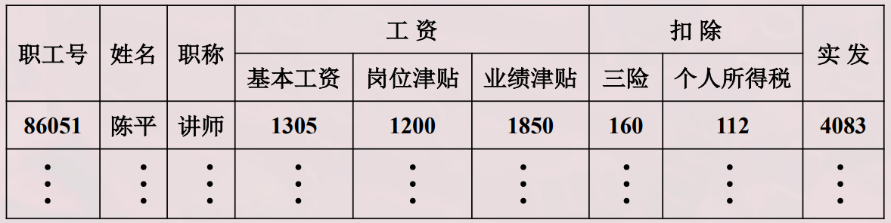
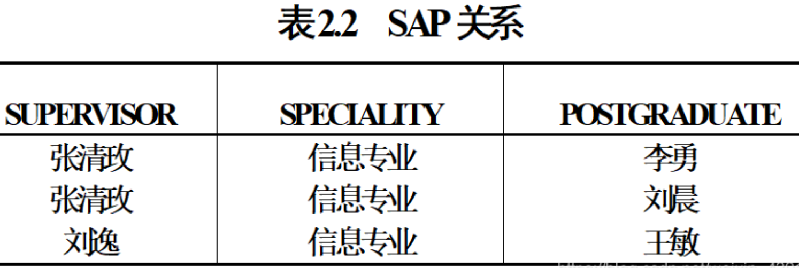
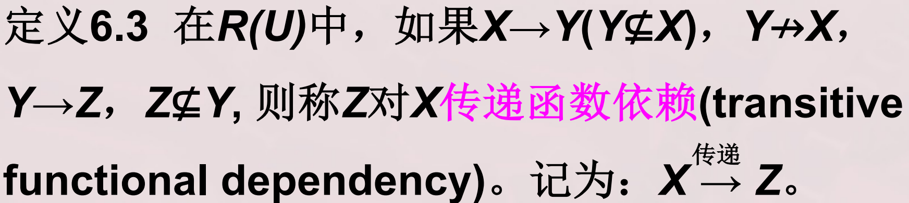
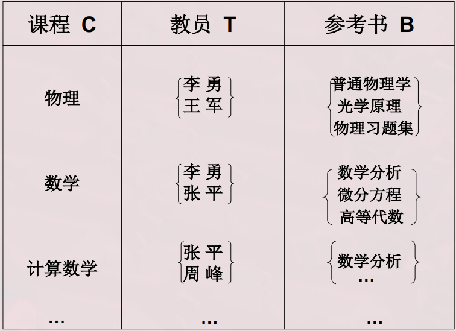
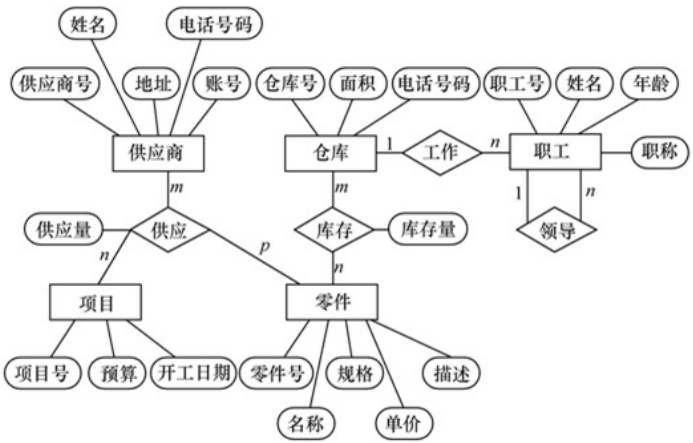

教材：
《数据库系统概论》第5版 王珊 萨师煊编著
https://blog.csdn.net/weixin_43914604/article/details/106527797
重点复习范围
第1章 绪论
数据库概念：主码，属性，约束
数据库vs文件系统
数据模型：层次模型，网状模型
三级模式，两级映射
第2章 关系数据库
关系模型概述
关系完整性：实体，参照，用户定义
关系代数：并，交，差，笛卡尔积；选择，投影，链接，除
第3章 关系数据库标准语言SQL
数据定义，数据查询，数据更新，视图
第4章 数据库安全性
安全控制
视图机制
审计
数据加密
第5章 数据库完整性
实体完整性
参照完整性
用户定义完整性
完整性约束命名子句（CONSTRAINT）
断言
触发器
第6章关系数据理论
函数依赖
范式，1NF，部分依赖，2NF，传递依赖，3NF，BCNF，多值依赖，4NF
第7章数据库设计
E-R模型：1:1，1:n，m:n
E-R图
数据模型优化
第8章数据库编程
嵌入式SQL
过程化SQL，存储过程和函数
跨数据库平台编程，ODBC
第9章 关系查询处理和查询优化
代数优化
物理优化
第10章 数据库恢复技术
事务Transaction，rollback/commit
事务ACID特性：原子性，一致性，隔离性，持续性
恢复技术：数据转储，日志文件，数据库镜像
第11章 并发控制
封锁：活锁和死锁
并发调度
两段锁
数据库系统概述
四个基本概念
数据
数据是数据库中存储的基本对象。
定义
描述事物的符号记录
种类
文本、图形、图像、音频、视频、学生的档案记录、货物的运输情况等
特点
数据与其语义是不可分的
数据举例
例如 93是一个数据
语义1：学生某门课的成绩
语义2：某人的体重
语义3：计算机系2003级学生人数
学生档案中的学生记录
（李明，男，197205，江苏南京市，计算机系，1990）
语义：学生姓名、性别、出生年月、籍贯、所在院系、入学时间
解释：李明是个大学生，1972年5月出生，江苏南京市人，1990年考入计算机系
数据库
数据库的定义
数据库(Database，简称DB)是长期储存在计算机内、有组织、可共享的大量数据的集合。
数据库的基本特征
数据按一定的数据模型组织、描述和储存
可为各种用户共享
冗余度较小
数据独立性较高
易扩展
数据库中的数据被设计为尽可能减少重复和多余的信息。换句话说，数据库中的数据被组织和存储以确保每个数据项都被最有效地利用，而不是重复存储相同的信息。减少冗余度有助于提高数据库的性能、节省存储空间，并且可以减少数据更新时可能导致的不一致性。
表 table
表 / 关系
关系模式
表名
表格式
表内容
Row行 / tuple元组 / record记录
column列 / field / attribute属性
列名
值
数据库管理系统
数据库管理系统——DataBase Management System
定义
DBMS是位于用户与操作系统之间的一层数据管理软件。
是基础软件，是一个大型复杂的软件系统。
数据库在计算机系统中的位置
用途
科学地组织和存储数据、高效地获取和维护数据。
主要功能
数据定义
提供数据定义语言（DDL）(创建，连接 DB)
定义数据库中的数据对象（Table,View..）
数据组织、存储和管理
分类组织、存储和管理各种数据
确定组织数据的文件结构和存取方式
实现数据之间的联系
提供多种存取方法提高存取效率(索引..)
数据操纵
提供数据操纵语言(DML)
实现对数据库的基本操作 (查询、插入、删除和修改)
事务管理和运行管理
数据库在建立、运行和维护时由数据库管理系统DBMS统一管理和控制
保证数据的安全性、完整性、多用户对数据的并发使用
发生故障后的系统恢复
建立和维护功能
数据库初始数据装载转换
数据库转储、介质故障恢复
数据库的重组织
性能监视、分析等
其它功能
数据库管理系统DBMS与网络中其它软件系统的通信
两个数据库管理系统DBMS系统的数据转换
异构数据库之间的互访和互操作
从系统来看：
编译器
执行引擎（优化查询算法）
数据访问和索引
通信控制
事务管理
恢复（备份日志）
安全控制
完整性控制以及数据字典等组成部分
这些组件相互协作，共同实现对数据的存储、管理和操作。
数据库系统
数据库系统（Database System，简称DBS）
定义
在计算机系统中引入数据库后的系统构成
构成
数据库 Database
数据库管理系统（及其开发工具）Database Management System
应用系统
数据库管理员 Database Administrator
数据管理技术的产生和发展
什么是数据管理
对数据进行分类、组织、编码、存储、检索和维护
数据处理的中心问题
数据管理技术的发展过程
人工管理阶段(20世纪40年代中–50年代中)
文件系统阶段(20世纪50年代末–60年代中)
数据库系统阶段(20世纪60年代末–现在)
20世纪50年代中之前：人工管理阶段
应用背景 科学计算
硬件背景 无直接存取存储设备
软件背景 没有操作系统
处理方式 批处理
人工管理阶段特点：
数据的管理者: 用户(程序员)，数据不保存
数据面向的对象: 某一应用程序
数据的共享程度: 无共享、冗余度极大
数据的独立性: 不独立，完全依赖于程序
数据的结构化: 无结构
数据控制能力: 应用程序自己控制
20世纪50年代末--60年代中：文件系统阶段
应用背景 科学计算、数据管理
硬件背景 磁盘、磁鼓
软件背景 有文件系统
处理方式 联机实时处理、批处理
文件系统阶段特点：
程序通过数据文件访问数据。文件系统阶段由操作系统的文件系统对数据进行管理，用户无需直接涉及物理设备及数据的物理组织细节。
文件系统提供一定的数据管理功能：
存取方法(索引、链接、直接存取、倒排文件等)
支持对文件的基本操作(增、删、改、查等)，用户程序不必考虑物理细节
数据的存取基本上以记录为单位
数据仍是面向应用的，一个数据文件对应一个用户程序
数据与程序有一定的独立性：实现了用户程序与数据的物理存储结构的分离
数据可在文件级为多用户共享
文件系统阶段的局限性：
数据的管理者：文件系统，数据可长期保存
数据面向的对象：应用程序，应用程序自己控制数据
数据的共享程度：共享性差、冗余度大。基本上一个程序对应一个文件；部分数据相同时，仍需建立各自文件；相同的数在多个文件中重复存储（word）
数据的结构化：记录内有结构，整体无结构
数据的独立性：独立性差，数据的逻辑结构改变必须修改应用程序；文件间的联系必须通过程序来构造。
数据的一致性：所有文件副本必须同时更新
当数据的规模极为庞大、数据间关系极为复杂时，文件系统阶段的上述问题就变得尖锐起来了
20世纪60年代末以来：数据库系统阶段
应用背景：大规模管理
硬件背景：大容量磁盘、磁盘阵列
软件背景：有数据库管理系统
处理方式：联机实时处理，分布处理，批处理
文件系统到数据库系统，标志着数据管理技术的飞跃
数据库系统的特点
数据结构化
整体数据的结构化是数据库的主要特征之一整体结构化：不再仅仅针对某一个应用，而是面向全组织 不仅数据内部结构化，整体是结构化的，数据之间具有联系数据库中实现的是数据的真正结构化数据的结构用
数据模型描述，无需程序定义和解释数据可以
变长数据的最小存取单位是
数据项
数据的共享性高，冗余度低，易扩充
数据库系统从整体角度看待和描述数据，数据面向整个系统，可以被多个用户、多个应用共享使用。
数据共享的好处减少数据冗余，节约存储空间（注意：数据库中并非完全消除冗余！有时为了提高数据的存取效率，同一数据可保留多个副本，但是这种冗余是在数据库系统的控制之下的。）
避免数据之间的不相容性与不一致性
使系统易于扩充
数据独立性高
物理独立性指用户的应用程序与存储在磁盘上的数据库中数据是相互独立的。当数据的物理存储改变了，应用程序不用改变。逻辑独立性指用户的应用程序与数据库的逻辑结构是相互独立的。数据的逻辑结构改变了，用户程序也可以不变。数据独立性是由数据库管理系统DBMS的二级映像功能来保证的
数据由DBMS统一管理和控制，DBMS提供的数据控制功能：
数据的安全性（Security）保护 保护数据，以防止不合法的使用造成的数据的泄密和破坏。
数据的完整性（Integrity）检查 将数据控制在有效的范围内，或保证数据之间满足一定的关系。
并发（Concurrency）控制 对多用户的并发操作加以控制和协调，防止相互干扰而得到错误的结果。
数据库恢复（Recovery） 将数据库从错误状态恢复到某一已知的正确状态。
应用程序与数据的对应关系（数据库系统）
数据库概念小结
数据库是长期存储在计算机内有组织的大量的共享的数据集合。
可以供各种用户共享，具有最小冗余度和较高的数据独立性。
数据库管理系统在数据库建立、运用和维护时对数据库进行统一控制，以保证数据的完整性、安全性，并在多用户同时使用数据库时进行并发控制，在发生故障后对数据库进行恢复。
数据模型
数据模型是对现实世界数据特征的抽象。
通俗地讲数据模型就是现实世界的模拟。
数据模型应满足三方面要求：
能比较真实地模拟现实世界
容易为人所理解
便于在计算机上实现
数据模型是数据库系统的核心和基础
两类数据模型
数据模型分为两类（分属两个不同的层次）：
概念模型也称信息模型，它是按用户的观点来对数据和信息建模，用于数据库设计。
逻辑模型和物理模型
逻辑模型主要包括网状模型、层次模型、关系模型、面向对象模型等，按计算机系统的观点对数据建模，用于DBMS实现。
物理模型是对数据最底层的抽象，描述数据在系统内部的表示方式和存取方法，在磁盘或磁带上的存储方式和存取方法。
客观对象的抽象过程---两步抽象
现实世界中的客观对象抽象为概念模型。（将现实世界抽象为信息世界）
把概念模型转换为某一DBMS支持的数据模型。（将信息世界转换为机器世界）
概念模型
用途与基本要求
概念模型的用途：
概念模型用于信息世界的建模
是现实世界到机器世界的一个中间层次
是数据库设计的有力工具
数据库设计人员和用户之间进行交流的语言
对概念模型的基本要求：
较强的语义表达能力
能够方便、直接地表达应用中的各种语义知识
简单、清晰、易于用户理解
信息世界中的基本概念
概念模型的一种表示方法：实体-联系方法
信息世界中的基本概念
实体（Entity）：客观存在并可相互区别的事物称为实体。可以是具体的人、事、物或抽象的概念。
属性（Attribute）：实体所具有的某一特性称为属性。一个实体可以由若干个属性来刻画。
码（Key）：唯一标识实体的属性集称为码。
域（Domain）：属性的取值范围称为该属性的域。
实体型（Entity Type）：用实体名及其属性名集合来抽象和刻画同类实体称为实体型
实体集（Entity Set）：同一类型实体的集合称为实体集
联系（Relationship）：
现实世界中事物内部以及事物之间的联系在信息世界中反映为实体内部的联系和实体之间的联系。
实体内部的联系通常是指组成实体的各属性之间的联系
实体之间的联系通常是指不同实体集之间的联系
实体之间的联系有一对一、一对多和多对多等多种类型
实体-联系方法（Entity-Relationship Approach）
用E-R图来描述现实世界的概念模型
E-R方法也称为E-R模型
数据模型的组成要素
数据结构-静态
数据模型的数据结构：描述数据库的组成对象，以及对象之间的联系
描述的内容：
与对象的类型、内容、性质有关
与数据之间联系有关
数据结构是对系统静态特性的描述
数据操作-动态
数据操作：对数据库中各种对象（型）的实例（值）允许执行的操作，及有关的操作规则。
数据操作的类型：
查询
更新（包括插入、删除、修改）
数据模型对操作的定义：
操作的确切含义
操作符号
操作规则（比如优先级）
实现操作的语言
数据操作是对系统动态特性的描述
数据的完整性约束条件
数据的完整性约束条件：
一组完整性规则的集合
完整性规则：给定的数据模型中数据及其联系所具有的制约和依存规则
用以限定符合数据模型的数据库状态以及状态的变化，以保证数据的正确、有效和相容
数据模型对完整性约束条件的定义：
反映和规定必须遵守的基本的通用的完整性约束条件
提供定义完整性约束条件的机制，以反映具体应用所涉及的数据必须遵守的特定的语义约束条件
常用的数据模型
层次模型（Hierarchical Model）
网状模型（Network Model）
关系模型（Relational Model)
面向对象数据模型（Object Oriented Data Model）
对象关系数据模型（Object Relational Data Model）
半结构化数据模型（Semistruture Data Model）
数据模型主要用于DBMS的实现。
一种DBMS通常只支持一种数据模型。数据模型不同，对应的DBMS差别很大，因此，DBMS的类型也通常依据数据模型的不同来划分。
层次模型
层次模型是数据库系统中最早出现的数据模型
层次数据库系统的典型代表是IBM公司的IMS（Information Management System）数据库管理系统
层次模型用树形结构来表示各类实体以及实体间的联系
数据结构
满足下面两个条件的基本层次联系的集合为层次模型：
有且只有一个结点没有双亲结点，这个结点称为根结点
根以外的其它结点有且只有一个双亲结点
层次模型中的几个术语：根结点，双亲结点，兄弟结点，叶结点
一个层次模型的示例如下所示：
层次模型的特点：
结点的双亲是唯一的
只能直接处理一对多的实体联系
每个记录类型可以定义一个排序字段，也称为码字段
任何记录值只有按其路径查看时，才能显出它的全部意义
没有一个子女记录值能够脱离双亲记录值而独立存在
一个简单的教员学生层次数据库模型如下所示：
教员学生层次数据库的一个值如下所示：
操纵与完整性约束
层次模型的数据操纵：
查询
插入
删除
更新
层次模型的完整性约束条件：
无相应的双亲结点值就不能插入子女结点值
如果删除双亲结点值，则相应的子女结点值也被同时删除
更新操作时，应更新所有相应记录，以保证数据的一致性
优点
层次模型的数据结构比较简单清晰
查询效率高，性能优于关系模型，不低于网状模型
层次数据模型提供了良好的完整性支持
缺点
结点之间的多对多联系表示不自然
对插入和删除操作的限制多，应用程序的编写比较复杂
查询子女结点必须通过双亲结点
层次命令趋于程序化
网状模型
网状数据库系统采用网状模型作为数据的组织方式
典型代表是DBTG系统，亦称CODASYL系统，是20世纪70年代由DBTG提出的一个系统方案。
实际系统：
Cullinet Software公司的 IDMS
Univac公司的 DMS1100
Honeywell公司的IDS/2
HP公司的IMAGE
数据结构
满足下面两个条件的基本层次联系的集合：
允许一个以上的结点无双亲
一个结点可以有多于一个的双亲
网状模型的表示方法（与层次数据模型相同）
实体型：用记录类型描述，每个结点表示一个记录类型（实体）
属性：用字段描述，每个记录类型可包含若干个字段
联系：用结点之间的连线表示记录类型（实体）之间的一对多的父子联系
网状模型与层次模型的区别：
网状模型允许多个结点没有双亲结点
网状模型允许结点有多个双亲结点
网状模型允许两个结点之间有多种联系（复合联系）
网状模型可以直接地描述现实世界
层次模型实际上是网状模型的一个特例
网状模型中子女结点与双亲结点的联系可以不唯一
要为每个联系命名，并指出与该联系有关的双亲记录和子女记录
网状模型的例子如下所示：
多对多联系在网状模型中的表示：
用网状模型间接表示多对多联系
方法：将多对多联系直接分解成一对多联系
例如：一个学生可以选修若干门课程，某一课程可以被多个学生选修，学生与课程之间是多对多联系
引进一个学生选课的联结记录，由3个数据项组成：
学号
课程号
成绩
表示某个学生选修某一门课程及其成绩
学生/选课/课程的网状数据模型如下所示：
操纵与完整性约束
网状数据库系统（如DBTG）对数据操纵加了一些限制，提供了一定的完整性约束
码：唯一标识记录的数据项的集合
一个联系中双亲记录与子女记录之间是一对多联系
支持双亲记录和子女记录之间某些约束条件
优点：
能够更为直接地描述现实世界，如一个结点可以有多个双亲
具有良好的性能，存取效率较高
缺点：
结构比较复杂，而且随着应用环境的扩大，数据库的结构就变得越来越复杂，不利于最终用户掌握
DDL、DML语言复杂，用户不容易使用
记录之间联系是通过存取路径实现的，用户必须了解系统结构的细节
关系模型
关系数据库系统采用关系模型作为数据的组织方式
1970年美国IBM公司San Jose研究室的研究员E.F.Codd首次提出了数据库系统的关系模型
计算机厂商新推出的数据库管理系统几乎都支持关系模型
数据结构
在用户观点下，关系模型中数据的逻辑结构是一张二维表，它由行和列组成。
关系（Relation）：一个关系对应通常说的一张表
元组（Tuple）：表中的一行即为一个元组
属性（Attribute）：表中的一列即为一个属性，给每一个属性起一个名称即属性名
主码（Key）：表中的某个属性组，它可以唯一确定一个元组。
域（Domain）：属性的取值范围。
分量：元组中的一个属性值。
关系模式：对关系的描述：
关系名（属性1，属性2，…，属性n）
学生（学号，姓名，年龄，性别，系，年级）
关系必须是规范化的，满足一定的规范条件：
最基本的规范条件：关系的每一个分量必须是一个不可分的数据项, 不允许表中还有表
下图中工资和扣除是可分的数据项，不符合关系模型要求

术语对比：
| 关系术语 | 一般表格的术语 |
|---|---|
| 关系名 | 表名 |
| 关系模式 | 表头（表格的描述） |
| 关系 | （一张）二维表 |
| 元组 | 记录或行 |
| 属性 | 列 |
| 属性名 | 列名 |
| 属性值 | 列值 |
| 分量 | 一条记录中的一个列值 |
| 非规范关系 | 表中有表（大表中嵌有小表） |
操纵与完整性约束
数据操作是集合操作，操作对象和操作结果都是关系
查询
插入
删除
更新
存取路径对用户隐蔽，用户只要指出“干什么”，不必详细说明“怎么干”
关系的完整性约束条件：
实体完整性
参照完整性
用户定义的完整性
优点
建立在严格的数学概念的基础上
概念单一
实体和各类联系都用关系来表示
对数据的检索结果也是关系
关系模型的存取路径对用户透明
具有更高的数据独立性，更好的安全保密性
简化了程序员的工作和数据库开发建立的工作
缺点
存取路径对用户透明，查询效率往往不如格式化数据模型
为提高性能，必须对用户的查询请求进行优化，增加了开发数据库管理系统的难度
数据库系统结构和组成
数据库系统结构
两种角度
从数据库管理系统角度看，数据库系统通常采用三级模式结构，是数据库系统内部的系统结构。
从数据库最终用户角度看（数据库系统外部的体系结构） ，数据库系统的结构分为：
单用户结构
主从式结构
分布式结构
客户／服务器
浏览器／应用服务器／数据库服务器多层结构等
数据库系统模式的概念
来自张教授的解疑：模式是数据库结构的描述、关系模式是表的结构的描述。
“型” 和“值” 的概念：
型(Type)：对某一类数据的结构和属性的说明
值(Value)：是型的一个具体赋值
例如：
学生记录型：
（学号，姓名，性别，系别，年龄，籍贯）
一个记录值：
（900201，李明，男，计算机，22，江苏）
模式（Schema）
数据库逻辑结构和特征的描述
是型的描述
反映的是数据的结构及其联系
模式是相对稳定的
实例（Instance）
模式的一个具体值
反映数据库某一时刻的状态
同一个模式可以有很多实例
实例随数据库中的数据的更新而变动
例如：在学生选课数据库模式中，包含学生记录、课程记录和学生选课记录
2003年的一个学生数据库实例，包含：
2003年学校中所有学生的记录
学校开设的所有课程的记录
所有学生选课的记录
2002年度学生数据库模式对应的实例与2003年度学生数据库模式对应的实例是不同的。
数据库系统的三级模式结构
模式（Schema）
模式（也称逻辑模式）
数据库中全体数据的逻辑结构和特征的描述
所有用户的公共数据视图，综合了所有用户的需求
一个数据库只有一个模式，可以把模式看成唯一的数据库，实例就是数据库里面的多个表。
模式的地位：是数据库系统模式结构的中间层
与数据的物理存储细节和硬件环境无关
与具体的应用程序、开发工具及高级程序设计语言无关
模式的定义：
数据的逻辑结构（数据项的名字、类型、取值范围等）
数据之间的联系
数据有关的安全性、完整性要求
外模式（External Schema）
外模式（也称子模式或用户模式）
数据库用户（包括应用程序员和最终用户）使用的局部数据的逻辑结构和特征的描述
数据库用户的数据视图，是与某一应用有关的数据的逻辑表示，可以看成把数据库的部分数据，运用在不同的应用程序上，在UI界面上显示
一个数据库只有一个模式，可以把模式看成唯一的数据库，实例就是数据库里面的多个表。
外模式的地位：介于模式与应用之间
模式与外模式的关系：一对多
外模式通常是模式的子集
一个数据库可以有多个外模式，不同的外模式反映了不同的用户的应用需求、看待数据的方式、对数据保密的要求。
模式中同一数据在外模式中的结构、类型、长度、保密级别等都可以不同
外模式与应用的关系：一对多
同一外模式也可以为某一用户的多个应用系统所使用
但一个应用程序只能使用一个外模式，可以看成把数据库的部分数据，运用在不同的应用程序上，在UI界面上显示
外模式的用途：
保证数据库安全性的一个有力措施
每个用户只能看见和访问所对应的外模式中的数据
内模式（Internal Schema）
内模式（也称存储模式）
是数据物理结构和存储方式的描述
一个数据库只有一个内模式
是数据在数据库内部的表示方式
记录的存储方式（顺序存储，按照B树结构存储，按hash方法存储）
索引的组织方式
数据是否压缩存储
数据是否加密
数据存储记录结构的规定
例如学生记录，如果按堆存储，则插入一条新记录总是放在学生记录存储的最后
如果按学号升序存储，则插入一条记录就要找到它应在的位置插入，如图1.29（b）所示
如果按照学生年龄聚簇存放，假如新插入的S3是16岁，则应插入的位置如图1.29（c）所示
数据库模式、外模式、内模式总结
数据库模式：
即全局逻辑结构是数据库的中心与关键
独立于数据库的其他层次
设计数据库模式结构时应首先确定数据库的逻辑模式
数据库的外模式：
面向具体的应用程序
定义在逻辑模式之上
独立于存储模式和存储设备
当应用需求发生较大变化，相应外模式不能满足其视图要求时，该外模式就得做相应改动
设计外模式时应充分考虑到应用的扩充性
数据库的内模式：
依赖于它的全局逻辑结构
独立于具体的存储设备
将全局逻辑结构中所定义的数据结构及其联系按照一定的物理存储策略进行组织，以达到较好的时间与空间效率
数据库的二级映像功能与数据独立性
三级模式是对数据的三个抽象级别
二级映象在DBMS内部实现这三个抽象层次的联系和转换
三级模式是对数据的三个抽象级别：
在数据库系统中，三级模式是对数据的三个抽象级别，分别是：
外模式（External Schema）：
也称为用户模式或子模式。
它是数据库用户（包括应用程序员和最终用户）能够看见和使用的局部数据的逻辑结构和特征的描述，是数据库用户的数据视图。
外模式是数据库用户的数据视图，是与某一应用有关的数据的逻辑表示。
它是数据库系统三级模式结构中的最外层，是用户与数据辜系统交互的接口。
对于一个外模式，数据库用户只能定义在其外模式描述范围内的数据，不能定义在此范围外的数据。
概念模式（Conceptual Schema）：
也称为模式或逻辑模式。
它是数据库中全体数据的逻辑结构和特征的描述，是所有用户的公共数据视图。
概念模式是数据库系统三级模式结构中的中间层，是所有用户的数据视图的集合，是数据库系统全局数据逻辑结构的描述，不受任何数据库管理系统支持的数据模型的影响。
概念模式是数据库设计人员进行数据库设计的有力工具，也是数据库管理系统运行的基本依据。
内模式（Internal Schema）：
也称为存储模式或物理模式。
它是数据物理结构和存储方式的描述，是数据在数据库内部的表示方式。
内模式是数据库系统三级模式结构中的最内层，是数据库的存储观。
一个数据库只有一个内模式，它是数据库在数据库内部的表示，不受任何数据库管理系统支持的数据模型的影响。 这三个抽象级别可以帮助实现数据独立性，即应用程序和数据的物理存储相互独立，应用程序只需要和外模式交互，不必关心数据在数据库内部的存储方式，这样就可以在不改变应用程序的情况下，改变数据的存储方式，提高数据库系统的灵活性和可扩展性。
二级映象在DBMS内部实现这三个抽象层次的联系和转换：
外模式／模式映像
模式／内模式映像
外模式／模式映象
模式：描述的是数据的全局逻辑结构
外模式：描述的是数据的局部逻辑结构
同一个模式可以有任意多个外模式
每一个外模式，数据库系统都有一个外模式／模式映象，定义外模式与模式之间的对应关系，看成数据库的数据与API调用的部分数据之间的关系(I think)
映象定义通常包含在各自外模式的描述中
保证数据的逻辑独立：
当模式改变时，数据库管理员修改有关的外模式／模式映象，使外模式保持不变
应用程序是依据数据的外模式编写的，从而应用程序不必修改，保证了数据与程序的逻辑独立性，简称数据的逻辑独立性。
模式／内模式映象
模式／内模式映象定义了数据全局逻辑结构与存储结构之间的对应关系。例如，说明逻辑记录和字段在内部是如何表示的
数据库中模式／内模式映象是唯一的
该映象定义通常包含在模式描述中
保证数据的物理独立性：
当数据库的存储结构改变了（例如选用了另一种存储结构），数据库管理员修改模式／内模式映象，使模式保持不变
应用程序不受影响。保证了数据与程序的物理独立性，简称数据的物理独立性。
特定的应用程序：
在外模式描述的数据结构上编制的
依赖于特定的外模式
与数据库的模式和存储结构独立
不同的应用程序有时可以共用同一个外模式
数据库的二级映像：
保证了数据库外模式的稳定性
从底层保证了应用程序的稳定性，除非应用需求本身发生变化，否则应用程序一般不需要修改
数据与程序之间的独立性，使得数据的定义和描述可以从应用程序中分离出去
数据的存取由DBMS管理
用户不必考虑存取路径等细节
简化了应用程序的编制
大大减少了应用程序的维护和修改
数据库的组成
数据库
数据库管理系统（及其开发工具）
应用系统
数据库管理员
硬件平台及数据库
软件
人员
硬件平台及数据库
数据库系统对硬件资源的要求：
足够大的内存
操作系统
DBMS的核心模块
数据缓冲区
应用程序
足够大的外存
磁盘或磁盘阵列
数据库
光盘、磁带
数据备份
较高的通道能力，提高数据传送率
软件
DBMS
支持DBMS运行的操作系统
与数据库接口的高级语言及其编译系统
以DBMS为核心的应用开发工具
为特定应用环境开发的数据库应用系统
人员
数据库管理员
系统分析员
数据库设计人员
应用程序员
用户
不同的人员涉及不同的数据抽象级别，具有不同的数据视图，如下图所示：
数据库管理员(DBA)
具体职责：
决定数据库中的信息内容和结构
决定数据库的存储结构和存取策略
定义数据的安全性要求和完整性约束条件
监控数据库的使用和运行
周期性转储数据库
数据文件
日志文件
系统故障恢复
介质故障恢复
监视审计文件
数据库的改进和重组
性能监控和调优
定期对数据库进行重组织，以提高系统的性能
需求增加和改变时，数据库须需要重构造
系统分析员
具体职责：
负责应用系统的需求分析和规范说明
与用户及DBA协商，确定系统的硬软件配置
参与数据库系统的概要设计
数据库设计人员
具体职责：
参加用户需求调查和系统分析
确定数据库中的数据
设计数据库各级模式
应用程序员
具体职责：
设计和编写应用系统的程序模块
进行调试和安装
用户
用户是指最终用户（End User）。
最终用户通过应用系统的用户接口使用数据库。
偶然用户
不经常访问数据库，但每次访问数据库时往往需要不同的数据库信息
企业或组织机构的高中级管理人员
简单用户
主要工作是查询和更新数据库
银行的职员、机票预定人员、旅馆总台服务员
复杂用户
工程师、科学家、经济学家、科技工作者等
直接使用数据库语言访问数据库，甚至能够基于数据库管理系统的API编制自己的应用程序
关系数据结构及形式化定义
关系
什么是关系？
单一的数据结构——关系
现实世界的实体以及实体间的各种联系均用关系来表示
逻辑结构——二维表
从用户角度，关系模型中数据的逻辑结构是一张二维表
建立在集合代数的基础上
域（Domain）
域是一组具有相同数据类型的值的集合。
例：
整数
实数
介于某个取值范围的整数
长度指定长度的字符串集合
{‘男’，‘女’}
笛卡尔积（Cartesian Product）
笛卡尔积（Cartesian Product）
给定一组域D1，D2，…，Dn，这些域中可以有相同的。
D1，D2，…，Dn的笛卡尔积为：
所有域的所有取值的一个组合，且不能重复。
笛卡儿积不一定有意义。
元组（Tuple）
笛卡尔积中每一个元素（d1，d2，…，dn）叫作一个n元组（n-tuple）或简称元组(Tuple)
(张清玫，计算机专业，李勇)、(张清玫，计算机专业，刘晨)等都是元组
分量（Component）
笛卡尔积元素（d1，d2，…，dn）中的每一个值 di 叫作一个分量
张清玫、计算机专业、李勇、刘晨等都是分量
基数（Cardinal number）
可以把基数看做笛卡尔积元素的个数，及元组的个数
若Di（i＝1，2，…，n）为有限集，其基数为mi（i＝1，2，…，n），则D1×D2×…×Dn的基数M为：
笛卡尔积的表示方式
笛卡尔积可表示为一个二维表
表中的每行对应一个元组，表中的每列对应一个域
关系（Relation）
关系
笛卡尔积D1×D2×…×Dn的子集叫作在域D1，D2，…，Dn上的关系，表示为：
R：关系名
n：关系的目或度（Degree）
一般要取有意义的子集作为关系
元组
关系中的每个元素是关系中的元组，通常用 t 表示。
单元关系与二元关系
当n=1时，称该关系为单元关系（Unary relation）或一元关系
当n=2时，称该关系为二元关系（Binary relation）
关系的表示
关系也是一个二维表，表的每行对应一个元组，表的每列对应一个域

属性
关系中不同列可以对应相同的域
为了加以区分，必须对每列起一个名字，称为属性（Attribute）
n目关系必有n个属性
码
候选码（Candidate key）
若关系中的某一属性组的值能唯一地标识一个元组，则称该属性组为候选码
简单的情况：候选码只包含一个属性
全码（All-key）
最极端的情况：关系模式的所有属性组是这个关系模式的候选码，称为全码（All-key）
主码
若一个关系有多个候选码，则选定其中一个为主码（Primary key）
主属性
候选码的诸属性称为主属性（Prime attribute）
不包含在任何侯选码中的属性称为非主属性（ Non-Prime attribute）或非码属性（Non-key attribute）
D1，D2，…，Dn的笛卡尔积的某个子集才有实际含义
例：表2.1 的笛卡尔积没有实际意义
取出有实际意义的元组来构造关系
关系：SAP(SUPERVISOR，SPECIALITY，POSTGRADUATE)
假设：导师与专业：1:1， 导师与研究生：1:n
主码：POSTGRADUATE（假设研究生不会重名）
SAP关系可以包含三个元组：
｛ (张清玫，计算机专业，李勇)， (张清玫，计算机专业，刘晨)，(刘逸，信息专业，王敏) }
三类关系
基本关系（基本表或基表）：实际存在的表，是实际存储数据的逻辑表示
查询表：查询结果对应的表
视图表：由基本表或其他视图表导出的表，是虚表，不对应实际存储的数据
在 SQL 中，视图是基于 SQL 语句的结果集的可视化的表。
视图包含行和列，就像一个真实的表。视图中的字段就是来自一个或多个数据库中的真实的表中的字段。
我们可以向视图添加 SQL 函数、WHERE 以及 JOIN 语句，我们也可以提交数据，就像这些来自于某个单一的表。
注释：数据库的设计和结构不会受到视图中的函数、where 或 join 语句的影响。
限定和扩充
无限关系在数据库中没有意义，限定关系为有限集合
由于笛卡儿积数学上不满足交换律 ， 因此(d1,d2,…,dn) != (d2, d1,…,dn)。通过为关系的每个列增加一个属性名的方法来取消关系属性的有序性，即(d1,d2,…,di,dj,…,dn) = (d1, d2 ,…,dj,di,…, dn)
基本关系(二维表)的性质：
列是同质的（Homogeneous）
不同的列可出自同一个域，其中的每一列称为一个属性，不同的属性要给予不同的属性名
列的顺序无所谓，列的次序可以任意交换
任意两个元组的候选码不能相同
行的顺序无所谓，行的次序可以任意交换
分量必须取原子值，这是规范条件中最基本的一条
关系模式
什么是关系模式
关系模式（Relation Schema）是型
关系是值
关系模式是对关系的描述：
元组集合的结构
属性构成
属性来自的域
属性与域之间的映象关系
元组语义以及完整性约束条件
属性间的数据依赖关系集合
定义关系模式
关系模式可以形式化地表示为：
R（U，D，DOM，F）
R 关系名
U 组成该关系的属性名集合
D 属性组U中属性所来自的域
DOM 属性向域的映象集合
F 属性间的数据依赖关系集合
举例：
导师和研究生出自同一个域——人，取不同的属性名，并在模式中定义属性向域的映象，即说明它们分别出自哪个域
DOM（SUPERVISOR-PERSON）= DOM（POSTGRADUATE-PERSON）= PERSON
关系模式通常可以简记为：
R (U) 或 R (A1，A2，…，An)
R: 关系名
A1，A2，…，An : 属性名
注：域名及属性向域的映象常常直接说明为属性的类型、长度
关系模式和关系的对比
关系模式：
对关系的描述
静态的、稳定的
关系：
关系模式在某一时刻的状态或内容
动态的、随时间不断变化的
关系模式和关系往往统称为关系，需要其他上下文加以区别
在数据库学科中可以把关系模式理解为表的结构、属性之间的关系、约束条件，把关系理解为二维表。
关系数据库
关系数据库：
在一个给定的应用领域中，所有关系（二维表）的集合构成一个关系数据库
关系数据库模式包括：
若干域的定义
在这些域上定义的若干关系模式
关系数据库的型与值：
关系数据库的型：关系数据库模式, 对关系数据库的描述。
关系数据库的值：关系模式在某一时刻对应的关系的集合，简称为关系数据库。
关系模型的存储结构：
实体及实体的联系用Table来表示，但Table是逻辑模型
有的关系数据库管理系统中一个表对应一个操作系统的文件，将物理数据组织交给操作系统完成 (Foxpro)
有的关系数据库管理系统从操作系统那里申请若干个文件，自己划分文件空间，组织表、索引等存储结构并进行存储管理
关系操作
基本关系操作
常用的关系操作
查询：选择、投影、连接、除、并、交、差、笛卡尔积
选择、投影、并、差、笛卡尔基是5种基本操作
数据更新：插入、删除、修改
关系操作的特点：集合操作方式，操作的对象和结果都是集合，一次一集合的方式。
关系数据库语言的分类
关系代数语言：用对关系的运算来表达查询要求，代表：ISBL
关系演算语言：用谓词来表达查询要求
元组关系演算语言：谓词变元的基本对象是元组变量，代表：APLHA, QUEL；
域关系演算语言：谓词变元的基本对象是域变量，代表：QBE；
具有关系代数和关系演算双重特点的语言：代表：SQL（Structured Query Language）
在数据库理论和实践中，关系代数语言、元组关系演算语言和域关系演算语言是三种抽象的查询语言，它们用于定义和操作关系数据库中的数据。这些语言提供了理论基础，用于描述如何从数据库中检索和操作数据。然而，在实际的数据库管理系统中，为了提高实用性和方便用户操作，往往会扩展这些基本语言，增加许多附加功能。
以下是一些常见的实用性附加功能：
聚集函数：
如 COUNT、SUM、AVG、MAX、MIN 等，用于对查询结果进行统计分析。
关系赋值：
允许将查询结果赋给变量，以便在后续查询中使用。
算数运算：
支持对数值类型的列进行加、减、乘、除等算数运算。
比较运算符：
除了传统的等于、不等于、大于、小于等比较运算符外，还可能包括如 IN、BETWEEN、LIKE 等用于复杂比较的运算符。
逻辑运算符：
如 AND、OR、NOT，用于组合多个条件表达式。
连接运算符：
支持不同类型的连接操作，如内连接（INNER JOIN）、外连接（LEFT/RIGHT/FULL OUTER JOIN）等。
子查询：
允许在查询中嵌套其他查询，以便实现更复杂的检索逻辑。
数据定义语言（DDL）：
如 CREATE、DROP、ALTER，用于定义和修改数据库结构。
数据控制语言（DCL）：
如 GRANT、REVOKE，用于控制不同用户对数据库的访问权限。
事务控制语言：
如 COMMIT、ROLLBACK，用于管理数据库事务。
窗口函数：
如 RANK、DENSE_RANK、ROW_NUMBER，用于对查询结果集进行分组和排序。
这些附加功能使得实际的查询语言（如 SQL）功能非常强大，能够满足用户在数据库操作中的各种需求。通过这些功能，用户可以执行复杂的查询、更新和管理操作，从而有效地使用数据库系统。
SQL 包括以下四种语言：
数据查询语言（DQL）：主要用于查询数据库中的数据，例如 SELECT 语句。
数据定义语言（DDL）：用于定义数据库的结构，例如 CREATE、DROP 和 ALTER 语句。
数据操纵语言（DML）：用于操纵数据库中的数据，例如 INSERT、UPDATE 和 DELETE 语句。
数据控制语言（DCL）：用于控制不同数据的访问权限，例如 GRANT 和 REVOKE 语句。
SQL与存储路径无关
SQL可进行查询优化
关系的完整性
对关系的约束。
关系的值随时间变化应满足的约束条件，通常是现实世界的要求，任何时候都需要满足这些语义约束
关系的三类完整性约束：
实体完整性和参照完整性称为关系的两个不变性，应该由关系系统自动支持。
用户定义的完整性需要遵循应用领域的约束条件，体现了具体领域中的语义约束。
实体完整性（Entity Integrity）
关系数据库中的每个元组应当是可区分的。
规则2.1 实体完整性规则：
若属性A是基本关系R的主属性，则属性A不能取空值。
空值就是“不知道”或“不存在”或“无意义”的值
例：
SAP(SUPERVISOR，SPECIALITY，POSTGRADUATE)
POSTGRADUATE：
主码（假设研究生不会重名）
不能取空值
实体完整性规则的说明：
实体完整性规则是针对基本关系而言的。一个基本表通常对应现实世界的一个实体集。
现实世界中的实体是可区分的，即它们具有某种唯一性标识。
关系模型中以主码作为唯一性标识。
主码中的属性即主属性不能取空值。主属性取空值，就说明存在某个不可标识的实体，即存在不可区分的实体，这与第 2 点相矛盾，因此这个规则称为实体完整性。
参照完整性（Referential Integrity）
在关系模型中实体和实体间的联系都是用关系来描述的，因此可能存在着关系和关系间的引用。
关系间的引用
参照完整性（Referential Integrity）：描述实体之间的联系。在关系模型中，实体以及实体之间的联系都用关系来表示。参照完整性一般指多个实体或关系之间的关联关系。这涉及到外键的定义，规定了外键与被参照的主键之间的引用规则。外键可以为空值，或者等于其所参照的关系中某个元组的主键值。
外码（Foreign Key）
设F是基本关系R的一个或一组属性，但不是关系R的码。如果F与基本关系S的主码Ks相对应，则称F是基本关系R的外码，即该码是另一个表的主码。
基本关系R称为参照关系（Referencing Relation），即本表。
基本关系S称为被参照关系（Referenced Relation） 或目标关系（Target Relation），即外码对应的主码所在的表。
关系R和S不一定是不同的关系
目标关系S的主码Ks和参照关系的外码F必须定义在同一个（或一组）域上
外码并不一定要与相应的主码同名，当外码与相应的主码属于不同关系时，往往取相同的名字，以便于识别
参照完整性规则
规则2.2 参照完整性规则：
若属性（或属性组）F是基本关系R的外码它与基本关系S的主码Ks相对应（基本关系R和S不一定是不同的关系），则对于R中每个元组在F上的值必须为：
或者取空值（F的每个属性值均为空值）
或者等于S中某个元组的主码值
外码的值要么为空，要么为S中某个元组的主码值。
用户定义的完整性（User-defined Integrity）
针对某一具体关系数据库的约束条件，反映某一具体应用所涉及的数据必须满足的语义要求
关系模型应提供定义和检验这类完整性的机制，以便用统一的系统的方法处理它们，而不要由应用程序承担这一功能
关系代数
关系代数是一种抽象的查询语言，它用对关系的运算来表达查询。
运算三要素：
运算对象
运算符
运算结果
运算对象是关系，运算结果亦为关系
关系代数的运算符有两类：集合运算符和专门的关系运算符
传统的集合运算是从关系的“水平”方向即行的角度进行
专门的关系运算不仅涉及行而且涉及列
关系代数运算符
四个传统集合运算是并（Union）、差（Difference）、交（Intersection）、笛卡尔积（Cartesian Product），它们可以用来操作关系之间的元组。
传统的集合运算
传统的集合运算是二目运算。并不是任意的两个关系都能进行这种集合运算。除笛卡尔积外，要求参加运算的关系必须具备相容性。
定义：设给定两个关系R、S，若满足：
具有相同的度n
R中第
i个属性和S中第i个属性来自同一个域
则说关系R、S是相容的。
并（Union）：
并运算符用于将两个关系的元组合并成一个关系。结果包含了两个关系的所有元组，但会自动去除重复项，确保结果中的元组是唯一的。
符号表示为 ∪（并集符号），即 R ∪ S。
示例：如果关系 R 包含元组 {1, 2, 3}，而关系 S 包含元组 {3, 4, 5}，则 R ∪ S 的结果将包含元组 {1, 2, 3, 4, 5}。
差（Difference）：
差运算符用于从一个关系中去除另一个关系中出现的元组。换句话说，它从一个关系中减去与另一个关系相同的元组。
符号表示为 -（减号），即 R - S。
示例：如果关系 R 包含元组 {1, 2, 3, 4}，而关系 S 包含元组 {3, 4, 5}，则 R - S 的结果将包含元组 {1, 2}。
交（Intersection）：
交运算符用于找到两个关系中共同出现的元组，即两个关系的交集。
符号表示为 ∩（交集符号），即 R ∩ S。
示例：如果关系 R 包含元组 {1, 2, 3, 4}，而关系 S 包含元组 {3, 4, 5}，则 R ∩ S 的结果将包含元组 {3, 4}。
笛卡尔积（Cartesian Product）：
笛卡尔积运算符将两个关系的每个元组都配对，生成一个新的关系。结果中的每个元组由两个关系中的一个元组组成，它们的组合方式是从第一个关系中的每个元组和第二个关系中的每个元组中选择一个。
R: n目关系，k1个元组 S: m目关系，k2个元组
列：（n+m）列元组的集合
元组的前n列是关系R的一个元组
后m列是关系S的一个元组
行：k1×k2个元组
作用：将两个关系无条件的连接成一个新关系，可用于两关系的连接操作。
这四种传统的集合运算是关系代数中的基础操作，可以通过它们的组合来实现更复杂的查询和操作。在关系型数据库中，这些运算符常常被用于编写查询语句以获取所需的数据。
一个笛卡尔积的例子：
专门的关系运算
几个记号
选择（Selection）
选择运算是从一个关系中选出满足特定条件的元组（行）。这可以通过使用一个或多个条件表达式来实现，这些表达式涉及到关系中的属性值。
选择运算的符号表示通常是一个希腊字母“σ”（sigma）。
投影（Projection）
投影运算是从一个关系中选出特定的属性（列）集合，并丢弃其他属性。结果是一个新的关系，其中包含原关系中所有满足条件的元组，但只包含选中的属性。
投影运算的符号表示通常是一个希腊字母“π”（pi）。
连接（Join）
连接运算是将两个关系在指定的属性上合并，形成一个新的关系。连接运算有多种类型，包括内连接（INNER JOIN）、外连接（LEFT/RIGHT/FULL OUTER JOIN）和自然连接。
内连接只选出在两个关系中都有匹配的元组，而外连接则允许在一个关系中没有匹配的元组出现在结果中。
左连接
右连接
外连接
除（Division）
综合举例
简单SQL
分组查询的SELECT目标列中只允许出现聚集函数和GROUP BY子句中出现过的列。
这句话是在描述SQL语言中分组查询（GROUP BY）的使用规则。在SQL中，当你使用GROUP BY子句对数据进行分组时，你只能在SELECT语句中选择那些在GROUP BY子句中出现过的列，或者是使用聚集函数（如COUNT、SUM、AVG、MAX、MIN等）进行计算的列。这是因为在分组查询中，每个分组只能返回一个值，所以非聚集函数的列必须有在GROUP BY中定义的唯一值。
让我们通过一个例子来解释这个规则：
假设我们有一个销售数据的表格，包含以下列：日期（Date）、商品ID（ProductID）、销售额（SalesAmount）。 如果我们想要查询每个商品ID的总销售额，我们可能会写一个如下的SQL查询：
1SELECT ProductID, SUM(SalesAmount)2FROM SalesTable3GROUP BY ProductID;在这个查询中，我们使用了GROUP BY子句按商品ID对数据进行分组，并且在SELECT语句中选择了ProductID列和SUM(SalesAmount)聚集函数。这个查询是有效的，因为它遵循了上述规则：SELECT中的ProductID是在GROUP BY子句中出现过的列，而SUM(SalesAmount)是一个聚集函数。
然而，如果我们尝试在SELECT语句中选择一个不在GROUP BY子句中的列，比如日期（Date），那么就会违反规则：
xxxxxxxxxx31SELECT ProductID, Date, SUM(SalesAmount)2FROM SalesTable3GROUP BY ProductID;这个查询是错误的，因为对于每个ProductID，可能会有多个不同的日期，所以在分组查询中不能直接选择日期列，除非我们对日期也进行了分组。如果我们想要包含日期信息，我们需要在GROUP BY子句中也包含日期：
xxxxxxxxxx31SELECT ProductID, Date, SUM(SalesAmount)2FROM SalesTable3GROUP BY ProductID, Date;这样，每个ProductID和Date的组合都会有一个唯一的分组，查询就是有效的。
聚集函数对于NULL是如何处理的？
聚集函数在处理NULL值时通常会忽略这些值。以下是几个常用聚集函数对NULL的处理方式：
COUNT(*)：计算所有行的数量，包括那些包含NULL值的行。COUNT(列名)：计算指定列的非NULL值的数量。SUM(列名)：只计算指定列的非NULL值的和，NULL值会被忽略。AVG(列名)：计算指定列的非NULL值的平均值，NULL值会被忽略。MIN(列名)：返回指定列的最小非NULL值。MAX(列名)：返回指定列的最大非NULL值。
例如，假设我们有一个包含销售额的列，其中有些行的销售额是NULL：
xxxxxxxxxx61SELECT COUNT(*) FROM sales; -- 计算所有行的数量2SELECT COUNT(SalesAmount) FROM sales; -- 计算非NULL销售额的数量3SELECT SUM(SalesAmount) FROM sales; -- 计算非NULL销售额的总和4SELECT AVG(SalesAmount) FROM sales; -- 计算非NULL销售额的平均值5SELECT MIN(SalesAmount) FROM sales; -- 返回最小的非NULL销售额6SELECT MAX(SalesAmount) FROM sales; -- 返回最大的非NULL销售额在这些例子中，只有COUNT(*)会考虑NULL值，其他聚集函数都会忽略NULL值。这是SQL标准的行为，但是不同的数据库管理系统可能会有额外的选项或函数来处理NULL值，例如SQL Server提供了COUNT(NULLIF(列名, NULL))来计数特定列中非NULL值的数量。
AVG(列名)：计算指定列的非NULL值的平均值，NULL值会被忽略。
那么如果有三个元组，其中有一个为NULL，那么它就会被忽略，但是AVG是求平均值，那么是三个的平均值呢？还是两个的平均值呢？
如果有一个包含三个元组的列，其中一个元组的值为NULL，那么在计算平均值时，NULL值会被忽略，只计算非NULL值的平均值。因此，AVG函数会计算剩余两个非NULL值的平均值。 例如，假设我们有以下三个元组：
10
20
NULL
AVG函数会忽略NULL值，只计算10和20的平均值，结果是15。
数学上，平均值是通过将所有非NULL值相加，然后除以非NULL值的数量来计算的。在这个例子中，非NULL值的总和是10 + 20 = 30，非NULL值的数量是2，所以平均值是30 / 2 = 15。
例3.63：查询至少选修了学生201215122选修的全部课程的学生号码。
解题思路：
用逻辑蕴涵表达：查询学号为x的学生，对所有的课程y只要201215122学生选修了课程y，则x也选修了y。
形式化表示：
用P表示谓词“学生201215122选修了课程y”
用q表示谓词“学生x选修了课程y”
则上述查询为：（∀y）p→q
等价变换：
变换后语义：不存在这样的课程y，学生201215122选修了y，而学生x没有选。
用NOT EXISTS谓词表示:
xxxxxxxxxx111SELECT DISTINCT Sno2FROM SC SCX3WHERE NOT EXISTS4 (SELECT *5 FROM SC SCY6 WHERE SCY.Sno = '201215122' AND7 NOT EXISTS8 (SELECT *9 FROM SC SCZ10 WHERE SCZ.Sno=SCX.Sno AND11 SCZ.Cno=SCY.Cno)));参考如下理解方式：
【深刻理解数据库SQL语言中的exists和not exists语句】 https://www.bilibili.com/video/BV1vu4m1M7Vm/?share_source=copy_web&vd_source=8fa0ddfc571cb8e214b881be981477a4
在数据库中，什么时候删除用DELETE，什么时候用DROP？
在数据库中，DELETE 和 DROP 是两个不同的操作，它们用于不同的目的：
DELETE：DELETE语句用于从表中删除行。它通常用于删除符合特定条件的数据，也可以删除表中的所有行，但表结构本身仍然存在。
语法示例：
DELETE FROM table_name WHERE condition;
DROP：DROP语句用于删除整个数据库结构，如表、视图或索引。当你不再需要某个表或数据库结构，并且想要彻底删除它时，你会使用
DROP。语法示例：
DROP TABLE table_name;或DROP DATABASE database_name;
简而言之，如果你只想删除表中的数据行，请使用 DELETE。如果你想要删除整个表或数据库结构，请使用 DROP。
数据库安全性
问题的提出
数据库的一大特点是数据可以共享
数据共享必然带来数据库的安全性问题
数据库系统中的数据共享不能是无条件的共享
例子：军事秘密、国家机密、新产品实验数据、市场需求分析、市场营销策略、销售计划、客户档案、医疗档案、银行储蓄数据
数据库的安全性是指保护数据库以防止不合法使用所造成的数据泄露、更改或破坏 。
系统安全保护措施是否有效是数据库系统主要的性能指标之一。
实现数据库系统安全性的技术和方法:
用户身份认证
访问控制技术：自主访问控制和强制访问控制
视图技术
审计技术
数据加密存储和加密传输
数据库安全性概述
数据库的不安全因素
非授权用户对数据库的恶意存取和破坏
一些黑客（Hacker）和犯罪分子在用户存取数据库时猎取用户名和用户口令，然后假冒合法用户偷取、修改甚至破坏用户数据。
数据库管理系统提供的安全措施主要包括用户身份认证、访问控制和视图等技术。
数据库中重要或敏感的数据被泄露
黑客和敌对分子千方百计盗窃数据库中的重要数据，一些机密信息被暴露。
数据库管理系统提供的主要技术有强制访问控制、数据加密存储和传输加密等。
审计：分析审计日志
安全环境的脆弱性
数据库的安全性与计算机系统的安全性紧密联系（计算机硬件、操作系统、网络系统等的安全性）
建立一套可信（Trusted）计算机系统的概念和标准
安全标准简介
1985年美国国防部（DoD）正式颁布《DoD可信计算机系统评估准则》（简称TCSEC或DoD85）。不同国家在TCSEC概念上建立自己的评估准则。
欧洲的信息技术安全评估准则（ITSEC）
加拿大的可信计算机产品评估准则（CTCPEC）
美国的信息技术安全联邦标准（FC）
1993年，CTCPEC、FC、TCSEC和ITSEC联合行动，解决原标准中概念和技术上的差异，称为CC（Common Criteria通用准则）项目。
1999年 CC V2.1版被ISO采用为国际标准，2001年 CC V2.1版被我国采用为国家标准。
目前CC已基本取代了TCSEC，成为评估信息产品安全性的主要标准。
1991年4月美国NCSC（国家计算机安全中心）颁布了《可信计算机系统评估标准关于可信数据库系统的解释》（ Trusted Database Interpretation 简称TDI）
TDI又称紫皮书。它将TCSEC扩展到数据库管理系统
TDI中定义了数据库管理系统的设计与实现中需满足和用以进行安全性级别评估的标准
TCSEC/TDI标准的基本内容
TCSEC/TDI，从四个方面来描述安全性级别划分的指标：
安全策略
责任
保证
文档
TCSEC/TDI安全级别划分
| 安全级别 | 定 义 |
|---|---|
| A1 | 验证设计（Verified Design） |
| B3 | 安全域（Security Domains） |
| B2 | 结构化保护（Structural Protection） |
| B1 | 标记安全保护（Labeled Security Protection) |
| C2 | 受控的访问保护（Controlled Access Protection) |
| C1 | 自主安全保护（Discretionary Security Protection) |
| D | 最小保护（Minimal Protection） |
四组（division）七个等级：
D
C（C1，C2）
B（B1，B2，B3）
A（A1）
按系统可靠或可信程度逐渐增高。
各安全级别之间具有一种偏序向下兼容的关系，即较高安全性级别提供的安全保护要包含较低级别的所有保护要求，同时提供更多或更完善的保护能力
D
将一切不符合更高标准的系统均归于D组
典型例子：DOS是安全标准为D的操作系统（DOS在安全性方面几乎没有什么专门的机制来保障）
C1
非常初级的自主安全保护
能够实现对用户和数据的分离，进行自主访问控制（DAC），保护或限制用户权限的传播。
现有的商业系统稍作改进即可满足
C2
安全产品的最低档次
提供受控的访问保护，将C1级的DAC进一步细化，以个人身份注册，并实施审计和资源隔离
达到C2级的产品在其名称中往往不突出“安全”（Security）这一特色
典型例子：
Windows 2000
Oracle 7
B1
标记安全保护。“安全”（Security）或“可信的”（Trusted）产品
对系统的数据加以标记，对标记的主体(用户，进程)和客体(表，视图，索引…)实施强制访问控制（MAC）、审计等安全机制
B1级典型例子：
操作系统：惠普公司的HP-UX BLS release 9.09+
数据库：
Oracle公司的Trusted Oracle 7
Sybase公司的Secure SQL Server version 11.0.6
B2
结构化保护
建立形式化的安全策略模型并对系统内的所有主体和客体实施DAC和MAC
B3
安全域
该级的TCB必须满足访问监控器( 监控主体和客体之间授权访问关系的部件)的要求，审计跟踪能力更强，并提供系统恢复过程
A1
验证设计，即提供B3级保护的同时给出系统的形式化设计说明和验证以确信各安全保护真正实现
CC
提出国际公认的表述信息技术安全性的结构
把信息产品的安全要求分为:
安全功能要求
安全保证要求
CC文本组成
简介和一般模型
有关术语、基本概念和一般模型以及与评估有关的一些框架
安全功能要求
列出了一系列类、子类和组件
安全保证要求
列出了一系列保证类、子类和组件
提出了评估保证级（Evaluation Assurance Level，EAL），从EAL1至EAL7共分为七级
CC评估保证级（EAL）划分
| 评估保证级 | 定 义 | TCSEG安全级别(近似相当) |
|---|---|---|
| EAL1 | 功能测试(functionally tested) | C1 |
| EAL2 | 结构测试(structurally tested) | C1 |
| EAL3 | 系统地测试和检查(methodically tested and checked) | C2 |
| EAL4 | 系统地设计、测试和复查(methodically designed,tested,and reviewed) | B1 |
| EAL5 | 半形式化设计和测试(semiformally designed and tested) | B2 |
| EAL6 | 半形式化验证的设计和测试(semiformally verified design and tested) | B3 |
| EAL7 | 形式化验证的设计和测试(formally verified design and tested) | A1 |
数据库安全性控制
非法使用数据库的情况:
编写合法程序绕过数据库管理系统及其授权机制
直接或编写应用程序执行非授权操作
通过多次合法查询数据库从中推导出一些保密数据
计算机系统中，安全措施是一级一级层层设置
计算机系统的安全模型如下所示：
系统根据用户标识鉴定用户身份，合法用户才准许进入计算机系统
数据库管理系统还要进行访问控制，只允许用户执行合法操作
操作系统有自己的保护措施
数据以加密形式存储到数据库中
数据库管理系统安全性控制模型如下所示：

访问控制流程
首先，数据库管理系统对提出SQL访问请求的数据库用户进行身份认证，防止不可信用户使用系统。
然后，在SQL处理层进行自主访问控制和强制访问控制，进一步可以进行推理控制。
还可以对用户访问行为和系统关键操作进行审计，对异常用户行为进行简单入侵检测。
数据库安全性控制的常用方法
用户标识和认证
访问控制
视图
审计
数据加密
用户标识和认证
（Identification & Authentication
系统提供的最外层安全保护措施
用户标识：由用户名（user name）和用户标识号 UID 组成（用户标识号UID在系统整个生命周期内唯一）
静态口令认证 ●静态口令一般由用户自己设定，这些口令是静态不变的(易破解)
动态口令认证 ●口令是动态变化的，每次认证时均需使用动态产生的新口令登录数据库管理系统，即采用一次一密的方法，短信
生物特征认证 ●通过生物特征进行认证的技术，生物特征如指纹、虹膜和掌纹等
智能卡认证 ●智能卡是一种不可复制的硬件，内置集成电路的芯片，具有硬件加密功能。PIN+智能卡
访问控制
访问控制机制组成：
定义用户权限，并将用户权限登记到数据字典中
用户对某一数据对象的操作权力称为权限
DBMS提供适当的语言来定义用户权限，存放在数据字典中，称做安全规则或授权规则
合法权限检查
用户发出存取数据库操作请求
DBMS查找数据字典，进行合法权限检查
用户权限定义和合法权检查机制一起组成了数据库管理系统的访问控制子系统
常用访问控制方法：
自主访问控制（Discretionary Access Control ，简称DAC）C2
用户对不同的数据对象有不同的访问权限
不同的用户对同一对象也有不同的权限
用户还可将其拥有的存取权限转授给其他用户
强制访问控制（Mandatory Access Control，简称 MAC）B1
每一个数据对象被标以一定的密级
每一个用户也被授予某一个级别的许可证
对于任意一个对象，只有具有合法许可证的用户才可以访问
自主访问控制方法
通过 SQL 的 GRANT 语句和 REVOKE 语句实现
用户权限组成：
数据对象
操作类型
定义用户访问权限：定义用户可以在哪些数据库对象上进行哪些类型的操作
定义访问权限称为授权
关系数据库系统中访问控制对象：
| 对象类型 | 对象 | 操 作 类 型 |
|---|---|---|
| 数据库模式 | 模式 | CREATE SCHEMA |
| 数据库模式 | 基本表 | CREATE TABLE, ALTER TABLE |
| 数据库模式 | 视图 | CREATE VIEW |
| 数据库模式 | 索引 | CREATE INDEX |
| 数据 | 基本表和视图 | SELECT, INSERT, UPDATE, DELETE, REFERENCES, ALL PRIVILEGES |
| 数据 | 属性列 | SELECT, INSERT, UPDATE, REFERENCES, ALL PRIVILEGES |
授权：授予与回收
GRANT，语义：将对指定操作对象的指定操作权限授予指定的用户
GRANT语句的一般格式如下：
xxxxxxxxxx41GRANT <权限1>, <权限2>, ...2ON <对象类型1> <对象名1>, <对象类型2> <对象名2>, ...3TO <用户1>, <用户2>, ...4[WITH GRANT OPTION];其中：
<权限>：指定要授予用户的权限，例如SELECT,INSERT,UPDATE,DELETE等。<对象类型>：指定对象的类型，例如TABLE,VIEW,SEQUENCE等。<对象名>：指定具体对象的名称。<用户>：指定要授予权限的用户账户。[WITH GRANT OPTION]：可选参数，如果包含这个选项，那么被授权的用户可以将这些权限再授予给其他用户。
发出GRANT：
数据库管理员
数据库对象创建者（即属主Owner）
拥有该权限的用户
接受权限的用户：
一个或多个具体用户
PUBLIC（即全体用户）
WITH GRANT OPTION子句：
指定：可以再授予
没有指定：不能传播
不允许循环授权：
[例4.1] 把查询Student表权限授给用户U1
xxxxxxxxxx31GRANT SELECT2ON TABLE Student3TO U1;
[例4.2] 把对Student表和Course表的全部权限授予用户U2和U3
xxxxxxxxxx31GRANT ALL PRIVILEGES2ON TABLE Student, Course3TO U2, U3;
[例4.3] 把对表SC的查询权限授予所有用户
xxxxxxxxxx31GRANT SELECT2ON TABLE SC3TO PUBLIC;
[例4.4] 把查询Student表和修改学生学号的权限授给用户U4
xxxxxxxxxx31GRANT UPDATE(Sno), SELECT2ON TABLE Student3TO U4;
对属性列的授权时必须明确指出相应属性列名
[例4.5] 把对表SC的INSERT权限授予U5用户，并允许他再将此权限授予其他用户
xxxxxxxxxx41GRANT INSERT2ON TABLE SC3TO U54WITH GRANT OPTION;
[例4.6]执行例4.5后，U5不仅拥有了对表SC的INSERT权限，还可以传播此权限：
xxxxxxxxxx41GRANT INSERT2ON TABLE SC3TO U64WITH GRANT OPTION;
[例4.7]同样，U6还可以将此权限授予U7：
xxxxxxxxxx31GRANT INSERT2ON TABLE SC3TO U7;但U7不能再传播此权限。
REVOKE
授予的权限可以由数据库管理员或其他授权者用REVOKE语句收回
REVOKE语句的一般格式为：
xxxxxxxxxx31REVOKE <权限>[,<权限>]...2ON <对象类型> <对象名>[,<对象类型> <对象名>]...3FROM <用户>[,<用户>]...[CASCADE | RESTRICT];
[例4.8] 把用户U4修改学生学号的权限收回
xxxxxxxxxx31REVOKE UPDATE(Sno)2ON TABLE Student3FROM U4;
[例4.9] 收回所有用户对表SC的查询权限
xxxxxxxxxx31REVOKE SELECT 2ON TABLE SC 3FROM PUBLIC;
[例4.10] 把用户U5对SC表的INSERT权限收回
xxxxxxxxxx31REVOKE INSERT 2ON TABLE SC 3FROM U5 CASCADE ;
将用户U5的INSERT权限收回的时候应该使用CASCADE，否则拒绝执行该语句
如果U6或U7还从其他用户处获得对SC表的INSERT权限，则他们仍具有此权限，系统只收回直接或间接从U5处获得的权限
小结：SQL灵活的授权机制
数据库管理员：
拥有所有对象的所有权限
根据实际情况不同的权限授予不同的用户
用户：
拥有自己建立的对象的的全部的操作权限
可以使用GRANT，把权限授予其他用户
被授权的用户：
如果具有“继续授权”的许可，可以把获得的权限再授予其他用户 所有授予出去的权力在必要时又都可用REVOKE语句收回
创建数据库模式的权限：
数据库管理员在创建用户时实现
xxxxxxxxxx31CREATE USER <username>2[WITH]3[DBA | RESOURCE | CONNECT];其中：
<username>：指定要创建的用户名。[WITH]：可选关键字，用于指定用户的其他属性。[DBA | RESOURCE | CONNECT]：指定用户的角色，DBA表示数据库管理员角色，RESOURCE表示用户可以创建某些对象，CONNECT表示用户可以连接到数据库。这些角色可以控制用户在数据库中的权限级别。
CREATE USER不是SQL标准，各个系统的实现相差甚远
CREATE USER语句格式说明：
只有系统的超级用户才有权创建一个新的数据库用户
新创建的数据库用户有三种权限：CONNECT、RESOURCE和DBA
如没有指定创建的新用户的权限，默认该用户拥有CONNECT权限。拥有CONNECT权限的用户不能创建新用户，不能创建模式，也不能创建基本表，只能登录数据库
拥有RESOURCE权限的用户能创建基本表和视图，成为所创建对象的属主。但不能创建模式，不能创建新的用户
拥有DBA权限的用户是系统中的超级用户，可以创建新的用户、创建模式、创建基本表和视图等；DBA拥有对所有数据库对象的存取权限，还可以把这些权限授予一般用户
| 拥有的权限 | CREATE USER | CREATE SCHEMA | CREATE TABLE | 登录数据库，执行数据查询和操纵 |
|---|---|---|---|---|
| DBA | 可以 | 可以 | 可以 | 可以 |
| RESOURCE | 不可以 | 不可以 | 可以 | 可以 |
| CONNECT | 不可以 | 不可以 | 不可以 | 可以，但必须拥有相应权限 |
数据库角色
数据库角色：被命名的一组与数据库操作相关的权限
角色是权限的集合
可以为一组具有相同权限的用户创建一个角色
简化授权的过程
角色的创建：
CREATE ROLE <角色名>
给角色授权：
xxxxxxxxxx31GRANT <权限>[,<权限>]… 2ON <对象类型>对象名3TO <角色>[,<角色>]…;
将一个角色授予其他的角色或用户：
xxxxxxxxxx31GRANT <角色1>[,<角色2>]…2TO <角色3>[,<用户1>]… 3[WITH ADMIN OPTION];该语句把角色授予某用户，或授予另一个角色
授予者是角色的创建者或拥有在这个角色上的ADMIN OPTION
指定了WITH ADMIN OPTION则获得某种权限的角色或用户还可以把这种权限授予其他角色
一个角色的权限：直接授予这个角色的全部权限加上其他角色授予这个角色的全部权限
角色权限的收回:
xxxxxxxxxx31REVOKE <权限>[,<权限>]…2ON <对象类型> <对象名>3FROM <角色>[,<角色>]…;用户可以回收角色的权限，从而修改角色拥有的权限
REVOKE执行者是
角色的创建者
拥有在这个（些）角色上的ADMIN OPTION
[例4.11] 通过角色来实现将一组权限授予一个用户。
步骤如下：
首先创建一个角色 R1
xxxxxxxxxx11CREATE ROLE R1;然后使用GRANT语句，使角色R1拥有Student表的SELECT、UPDATE、INSERT权限
xxxxxxxxxx31GRANT SELECT, UPDATE, INSERT 2ON TABLE Student 3TO R1;将这个角色授予王平，张明，赵玲。使他们具有角色R1所包含的全部权限
xxxxxxxxxx21GRANT R1 2TO 王平,张明,赵玲;可以一次性通过R1来回收王平的这3个权限
xxxxxxxxxx21REVOKE R1 2FROM 王平;
[例4.12] 角色的权限修改
xxxxxxxxxx31GRANT DELETE 2ON TABLE Student3TO R1;使角色R1在原来的基础上增加了Student表的 DELETE 权限
[例4.13]
xxxxxxxxxx31REVOKE SELECT 2ON TABLE Student3FROM R1;使R1减少了SELECT权限
强制访问控制方法
可能存在数据的“无意泄露”
原因：这种机制仅仅通过对数据的访问权限来进行安全控制，而数据本身并无安全性标记
解决：对系统控制下的所有主客体实施强制访问控制策略
强制访问控制（MAC）
保证更高程度的安全性
用户不能直接感知或进行控制
适用于对数据有严格而固定密级分类的部门
军事部门
政府部门
在强制访问控制中，数据库管理系统所管理的全部实体被分为主体和客体两大类
主体是系统中的活动实体：
数据库管理系统所管理的实际用户
代表用户的各进程
客体是系统中的被动实体，受主体操纵：
文件
基本表
索引
视图
对于主体和客体，DBMS为它们每个实例（值）指派一个敏感度标记（Label）
敏感度标记分成若干级别：
绝密（Top Secret，TS）
机密（Secret，S）
可信（Confidential，C）
公开（Public，P）
TS>=S>=C>=P
主体的敏感度标记称为许可证级别（Clearance Level）
客体的敏感度标记称为密级（Classification Level）
强制访问控制规则：
仅当主体的许可证级别大于或等于客体的密级时，该主体才能读取相应的客体
仅当主体的许可证级别小于或等于客体的密级时，该主体才能写相应的客体
强制访问控制（MAC）是对数据本身进行密级标记，无论数据如何复制，标记与数据是一个不可分的整体，只有符合密级标记要求的用户才可以操纵数据。
实现强制访问控制时要首先实现自主访问控制。
原因：较高安全性级别提供的安全保护要包含较低级别的所有保护
自主访问控制与强制访问控制共同构成数据库管理系统的安全机制
DAC + MAC安全检查
先进行自主访问控制检查，通过自主访问控制检查的数据对象再由系统进行强制访问控制检查，只有通过强制访问控制检查的数据对象方可访问。
视图机制
把要保密的数据对无权存取这些数据的用户隐藏起来，对数据提供一定程度的安全保护
间接地实现支持存取谓词的用户权限定义
[例4.14] 建立计算机系学生的视图，把对该视图的 SELECT 权限授于王平，把该视图上的所有操作权限授于张明
先建立计算机系学生的视图CS_Student：
xxxxxxxxxx51CREATE VIEW CS_Student2AS 3SELECT *4FROM Student5WHERE Sdept='CS';在视图上进一步定义存取权限：
xxxxxxxxxx61GRANT SELECT2ON CS_Student 3TO 王平;4GRANT ALL PRIVILIGES5ON CS_Student 6TO 张明;
审计（Audit）
什么是审计
启用一个专用的审计日志（Audit Log），将用户对数据库的所有操作记录在上面
审计员利用审计日志监控数据库中的各种行为，找出非法存取数据的人、时间和内容
C2以上安全级别的DBMS必须具有审计功能
审计功能的可选性
审计很费时间和空间
DBA可以根据应用对安全性的要求，灵活地打开或关闭审计功能
审计功能主要用于安全性要求较高的部门
审计事件
服务器事件
审计数据库服务器发生的事件(启动,停止,…)
系统权限
对系统拥有的结构或模式对象进行操作的审计
要求该操作的权限是通过系统权限获得的
语句事件
对SQL语句，如DDL(Creat, drop…)、DML(update, insert, delete)、DQL(select)及DCL(Grant)语句的审计
模式对象事件
对特定模式对象上进行的SELECT或DML操作的审计
审计功能
基本功能：提供多种审计查阅方式
多套审计规则：一般在初始化设定
提供审计分析和报表功能
审计日志管理功能
防止审计员误删审计记录，审计日志必须先转储后删除
对转储的审计记录文件提供完整性和保密性保护
只允许审计员查阅和转储审计记录，不允许任何用户新增和修改审计记录等
提供查询审计设置及审计记录信息的专门视图
语句
AUDIT语句和NOAUDIT语句
AUDIT语句：设置审计功能
NOAUDIT语句：取消审计功能
用户级审计
任何用户可设置的审计
主要是用户针对自己创建的数据库表和视图进行审计
系统级审计
只能由数据库管理员设置
监测成功或失败的登录要求、监测授权和收回操作以及其他数据库级权限下的操作
[例4.15] 对修改SC表结构或修改SC表数据的操作进行审计
xxxxxxxxxx21AUDIT ALTER,UPDATE 2ON SC;[例4.16] 取消对SC表的一切审计
xxxxxxxxxx21NOAUDIT ALTER,UPDATE 2ON SC;
数据加密
数据加密：防止数据库中数据在存储和传输中失密的有效手段
加密的基本思想：根据一定的算法将原始数据—明文（Plain text）变换为不可直接识别的格式—密文（Cipher text）
加密方法：
存储加密
传输加密
存储加密
透明存储加密：
内核级加密保护方式，对用户完全透明
将数据在写到磁盘时对数据进行加密，授权用户读取数据时再对其进行解密
数据库的应用程序不需要做任何修改，只需在创建表语句中说明需加密的字段即可
内核级加密方法: 性能较好，安全完备性较高
非透明存储加密：
通过多个加密函数实现
传输加密
链路加密：
在链路层进行加密
传输信息由报头和报文两部分组成
报文和报头均加密
端到端加密：
在发送端加密，接收端解密
只加密报文不加密报头
所需密码设备数量相对较少，容易被非法监听者发现并从中获取敏感信息
数据库管理系统可信传输示意图如下所示：
基于安全套接层协议SSL传输方案的实现思路：
确认通信双方端点的可靠性
采用基于数字证书的服务器和客户端认证方式
通信时均首先向对方提供己方证书，然后使用本地的 CA 信任列表和证书撤销列表对接收到的对方证书进行验证
协商加密算法和密钥
确认双方端点的可靠性后，通信双方协商本次会话的加密算法与密钥
可信数据传输
业务数据在被发送之前将被用某一组特定的密钥进行加密和消息摘要计算，以密文形式在网络上传输
当业务数据被接收的时候，需用相同一组特定的密钥进行解密和摘要计算
其他安全性保护
推理控制
处理强制访问控制未解决的问题
避免用户利用能够访问的数据推知更高密级的数据
常用方法:
基于函数依赖的推理控制
基于敏感关联的推理控制
隐蔽信道
处理强制访问控制未解决的问题
数据隐私保护
描述个人控制其不愿他人知道或他人不便知道的个人数据的能力
范围很广：数据收集、数据存储、数据处理和数据发布等各个阶段
数据库完整性
数据库的完整性：
数据的正确性：是指数据是符合现实世界语义，反映了当前的实际状况
数据的相容性：是指数据库同一对象在不同关系表中的数据是符合逻辑的不互相矛盾
数据的完整性和安全性是两个不同概念
数据的完整性：
防止数据库中存在不符合语义的数据，也就是防止数据库中存在不正确的数据
防范对象：不合语义的、不正确的数据
数据的安全性：
保护数据库 防止恶意的破坏和非法的存取
防范对象：非法用户和非法操作
为维护数据库的完整性，数据库管理系统必须：
提供定义完整性约束条件的机制
完整性约束条件也称为完整性规则，是数据库中的数据必须满足的语义约束条件
SQL标准使用了一系列概念来描述完整性，包括关系模型的实体完整性、参照完整性和用户定义完整性
这些完整性一般由SQL的数据定义语言语句来实现
提供完整性检查的方法
数据库管理系统中检查数据是否满足完整性约束条件的机制称为完整性检查
一般在INSERT、UPDATE、DELETE语句执行后开始检查，也可以在事务提交时检查
违约处理
数据库管理系统若发现用户的操作违背了完整性约束条件，就采取一定的动作
拒绝（NO ACTION）执行该操作
级连（CASCADE）执行其他操作
DBMS自动处理，早期的DBMS不能实现。
应用也可以实现，但无法保障，且增加程序员负担。
实体完整性
实体完整性定义
关系模型的实体完整性：
CREATE TABLE中用PRIMARY KEY定义
单属性构成的码有两种说明方法：
定义为列级约束条件
定义为表级约束条件
对多个属性构成的码只有一种说明方法：定义为表级约束条件
[例5.1] 将Student表中的Sno属性定义为码
在列级定义主码
xxxxxxxxxx71CREATE TABLE Student2( Sno CHAR(9) PRIMARY KEY,3 Sname CHAR(20) NOT NULL, 4 Ssex CHAR(2),5 Sage SMALLINT,6 Sdept CHAR(20)7);在表级定义主码
xxxxxxxxxx81CREATE TABLE Student2( Sno CHAR(9), 3 Sname CHAR(20) NOT NULL,4 Ssex CHAR(2),5 Sage SMALLINT,6 Sdept CHAR(20),7 PRIMARY KEY (Sno)8);
[例5.2] 将SC表中的Sno，Cno属性组定义为码
xxxxxxxxxx61CREATE TABLE SC2( Sno CHAR(9) NOT NULL, 3 Cno CHAR(4) NOT NULL, 4 Grade SMALLINT,5 PRIMARY KEY (Sno,Cno) /*只能在表级定义主码*/6);
实体完整性检查和违约处理
插入或对主码列进行更新操作时，关系数据库管理系统按照实体完整性规则自动进行检查。包括：
检查主码值是否唯一，如果不唯一则拒绝插入或修改
检查主码的各个属性是否为空，只要有一个为空就拒绝插入或修改
检查记录中主码值是否唯一的一种方法是进行全表扫描，依次判断表中每一条记录的主码值与将插入记录上的主码值（或者修改的新主码值）是否相同
表扫描缺点：十分耗时
为避免对基本表进行全表扫描，RDBMS核心一般都在主码上自动建立一个索引
B+树索引
新插入记录的主码值是25
通过主码索引，从B+树的根结点开始查找
读取3个结点：根结点（51）、中间结点（12 30）、叶结点（15 20 25）
该主码值已经存在，不能插入这条记录
参照完整性
参照完整性定义
关系模型的参照完整性定义：
在CREATE TABLE中用FOREIGN KEY短语定义哪些列为外码，用REFERENCES短语指明这些外码参照哪些表的主码
例如，关系SC中（Sno，Cno）是主码。Sno，Cno分别参照Student表的主码和Course表的主码
[例5.3]定义SC中的参照完整性
xxxxxxxxxx101CREATE TABLE SC2( Sno CHAR(9) NOT NULL, 3 Cno CHAR(4) NOT NULL, 4 Grade SMALLINT,5 PRIMARY KEY (Sno, Cno), /*在表级定义实体完整性*/6 FOREIGN KEY (Sno) REFERENCES Student(Sno),7 /*在表级定义参照完整性*/8 FOREIGN KEY (Cno) REFERENCES Course(Cno)9 /*在表级定义参照完整性*/10);
参照完整性检查和违约处理
一个参照完整性将两个表中的相应元组联系起来，对被参照表和参照表进行增删改操作时有可能破坏参照完整性，必须进行检查。
例如，对表SC和Student有四种可能破坏参照完整性的情况 :
SC表中增加一个元组，该元组的Sno属性的值在表Student中找不到一个元组，其Sno属性的值与之相等
修改SC表中的一个元组，修改后该元组的Sno属性的值在表Student中找不到一个元组，其Sno属性的值与之相等
例如，对表SC和Student有四种可能破坏参照完整性的情况 （续）:
从Student表中删除一个元组，造成SC表中某些元组的Sno属性的值在表Student中找不到一个元组，其Sno属性的值与之相等。
修改Student表中一个元组的Sno属性，造成SC表中某些元组的Sno属性的值在表Student中找不到一个元组，其Sno属性的值与之相等 。
可能破坏参照完整性的情况及违约处理如下图所示：
参照完整性违约处理：
拒绝（NO ACTION）执行：不允许该操作执行。该策略一般设置为默认策略。
级联（CASCADE）操作：当删除或修改被参照表（Student）的一个元组造成了与参照表（SC）的不一致，则删除或修改参照表中的所有造成不一致的元组
设置为空值（SET-NULL）：当删除或修改被参照表的一个元组时造成了不一致，则将参照表中的所有造成不一致的元组的对应属性设置为空值。
例如，有下面2个关系：
学生（学号，姓名，性别，专业号，年龄）
专业（专业号，专业名）
假设专业表中某个元组被删除，专业号为12
按照设置为空值的策略，就要把学生表中专业号=12的所有元组的专业号设置为空值
对应语义：某个专业删除了，该专业的所有学生专业未定，等待重新分配专业
对于参照完整性，除了应该定义外码，还应定义外码列是否允许空值
[例5.4] 显式说明参照完整性的违约处理示例
xxxxxxxxxx121CREATE TABLE SC (2 Sno CHAR(9) NOT NULL,3 Cno CHAR(4) NOT NULL,4 Grade SMALLINT,5 PRIMARY KEY(Sno,Cno),6 FOREIGN KEY (Sno) REFERENCES Student(Sno)7 ON DELETE CASCADE -- 级联删除SC表中相应的元组8 ON UPDATE CASCADE, -- 级联更新SC表中相应的元组9 FOREIGN KEY (Cno) REFERENCES Course(Cno)10 ON DELETE NO ACTION -- 当删除course表中的元组造成了与SC表不一致时拒绝删除11 ON UPDATE CASCADE -- 当更新course表中的cno时，级联更新SC表中相应的元组12);
用户定义的完整性
用户定义的完整性是：针对某一具体应用的数据必须满足的语义要求。
关系数据库管理系统提供了定义和检验用户定义完整性的机制，不必由应用程序承担
属性上的约束条件
CREATE TABLE时定义属性上的约束条件：
列值非空（NOT NULL）
列值唯一（UNIQUE）
检查列值是否满足一个条件表达式（CHECK）
不允许取空值
[例5.5] 在定义SC表时，说明Sno、Cno、Grade属性不允许取空值。
xxxxxxxxxx91CREATE TABLE SC2( Sno CHAR(9) NOT NULL,3 Cno CHAR(4) NOT NULL,4 Grade SMALLINT NOT NULL,5 PRIMARY KEY (Sno, Cno), 6 …7 /* 如果在表级定义实体完整性，隐含了Sno，Cno不允许取空值，则在8 列级不允许取空值的定义 可以不写（不同DBMS处理方式可能不同） * /9);
列值唯一
[例5.6]建立部门表DEPT，要求部门名称Dname列取值唯一，部门编号Deptno列为主码
xxxxxxxxxx71CREATE TABLE DEPT2( Deptno NUMERIC(2),3 Dname CHAR(9) UNIQUE NOT NULL，4 /*要求Dname列值唯一, 并且不能取空值*/5 Location CHAR(10),6 PRIMARY KEY (Deptno)7);
CHECK短语
用CHECK短语指定列值应该满足的条件
[例5.7] Student表的Ssex只允许取“男”或“女”。
xxxxxxxxxx81CREATE TABLE Student2( Sno CHAR(9) PRIMARY KEY,3 Sname CHAR(8) NOT NULL, 4 Ssex CHAR(2) CHECK （Ssex IN （‘男’,’女’）），5 /*性别属性Ssex只允许取'男'或'女' */6 Sage SMALLINT,7 Sdept CHAR(20)8);
[例5.8] SC表的Grade的值应该在0和100之间。
xxxxxxxxxx91CREATE TABLE SC2( Sno CHAR(9) ,3 Cno CHAR(4),4 Grade SMALLINT CHECK (Grade>=0 AND Grade <=100)，5 /*Grade取值范围是0到100*/6 PRIMARY KEY (Sno,Cno),7 FOREIGN KEY (Sno) REFERENCES Student(Sno),8 FOREIGN KEY (Cno) REFERENCES Course(Cno)9);
属性上的约束条件检查和违约处理
插入元组或修改属性的值时，关系数据库管理系统检查属性上的约束条件是否被满足，如果不满足则操作被拒绝执行。
元组上的约束条件
在CREATE TABLE时可以用CHECK短语定义元组上的约束条件，即元组级的限制。
同属性值限制相比，元组级的限制可以设置不同属性之间的取值的相互约束条件。
[例5.9]当学生的性别是男时，其名字不能以Ms.打头。
xxxxxxxxxx101CREATE TABLE Student2( Sno CHAR(9), 3 Sname CHAR(8) NOT NULL，4 Ssex CHAR(2),5 Sage SMALLINT,6 Sdept CHAR(20),7 PRIMARY KEY (Sno),8 CHECK (Ssex='女' OR Sname NOT LIKE 'Ms.%')9 /*定义了元组中Sname和 Ssex两个属性值之间的约束条件*/10);性别是女性的元组都能通过该项检查，因为Ssex=‘女’成立;
当性别是男性时，要通过检查则名字一定不能以Ms.打头
元组上的约束条件检查和违约处理
插入元组或修改属性的值时，关系数据库管理系统检查元组上的约束条件是否被满足，如果不满足则操作被拒绝执行
完整性约束命名字句
新建
完整性约束命名子句：
xxxxxxxxxx11CONSTRAINT <完整性约束条件名><完整性约束条件><完整性约束条件>包括NOT NULL、UNIQUE、PRIMARY KEY短语、FOREIGN KEY短语、CHECK短语等
[例5.10]建立学生登记表Student，要求学号在90000~99999之间，姓名不能取空值，年龄小于30，性别只能是“男”或“女”。
xxxxxxxxxx111CREATE TABLE Student2( Sno NUMERIC(6)3 CONSTRAINT C1 CHECK (Sno BETWEEN 90000 AND 99999),4 Sname CHAR(20)5 CONSTRAINT C2 NOT NULL,6 Sage NUMERIC(3)7 CONSTRAINT C3 CHECK (Sage < 30),8 Ssex CHAR(2)9 CONSTRAINT C4 CHECK (Ssex IN ( ‘男’,'女')),10 CONSTRAINT StudentKey PRIMARY KEY(Sno)11);在Student表上建立了5个约束条件，包括主码约束（命名为 StudentKey）以及C1、C2、C3、C4四个列级约束。
[例5.11]建立教师表TEACHER，要求每个教师的应发工资不低于3000元。
应发工资是工资列Sal与扣除项Deduct之和。
xxxxxxxxxx111CREATE TABLE TEACHER2( Eno NUMERIC(4) PRIMARY KEY /*在列级定义主码*/3 Ename CHAR(10),4 Job CHAR(8),5 Sal NUMERIC(7,2),6 Deduct NUMERIC(7,2),7 Deptno NUMERIC(2),8 CONSTRAINT TEACHERFKey FOREIGN KEY (Deptno)9 REFERENCES DEPT(Deptno),10 CONSTRAINT C1 CHECK (Sal + Deduct >= 3000)11);
修改
修改表中的完整性限制：使用ALTER TABLE语句修改表中的完整性限制
[例5.12]去掉例5.10 Student表中对性别的限制。
xxxxxxxxxx21ALTER TABLE Student2DROP CONSTRAINT C4;
[例5.13] 修改表Student中的约束条件，要求学号改为在900000~999999之间，年龄由小于30改为小于40
可以先删除原来的约束条件，再增加新的约束条件
xxxxxxxxxx81ALTER TABLE Student2DROP CONSTRAINT C1;3ALTER TABLE Student4ADD CONSTRAINT C1 CHECK (Sno BETWEEN 900000 AND 999999),5ALTER TABLE Student6DROP CONSTRAINT C3;7ALTER TABLE Student8ADD CONSTRAINT C3 CHECK(Sage < 40);
*域中的完整性限制
断言
SQL中，可以使用 CREATE ASSERTION语句，通过声明性断言来指定更具一般性的约束。
断言可以定义涉及多个表的或聚集操作的比较复杂的完整性约束。
断言创建以后，任何对断言中所涉及的关系的操作都会触发关系数据库管理系统对断言的检查，任何使断言不为真值的操作都会被拒绝执行。
创建断言的语句格式
xxxxxxxxxx11CREATE ASSERTION<断言名><CHECK 子句>每个断言都被赋予一个名字，<CHECK 子句>中的约束条件与WHERE子句的条件表达式类似。
[例5.18] 限制数据库课程最多60名学生选修
xxxxxxxxxx71CREATE ASSERTION ASSE_SC_DB_NUM2 CHECK (60 >= (select count(*)3 /*此断言的谓词涉及聚集操作count的SQL语句*/4 From Course,SC5 Where SC.Cno=Course.Cno and 6 Course.Cname ='数据库')7 );
[例5.19]限制每一门课程最多60名学生选修
xxxxxxxxxx61CREATE ASSERTION ASSE_SC_CNUM12 CHECK(60 >= ALL (SELECT count(*) 3 FROM SC 4 GROUP by cno)5);6/*此断言的谓词，涉及聚集操作count 和分组函数group by的SQL语句*/
[例5.20]限制每个学期每一门课程最多60名学生选修
首先需要修改SC表的模式，增加一个“学期（TERM）”属性
xxxxxxxxxx11ALTER TABLE SC ADD TERM DATE;然后，定义断言：
xxxxxxxxxx51CREATE ASSERTION ASSE_SC_CNUM22 CHECK(60 >= ALL (SELECT count(*)3 FROM SC4 GROUP by cno,TERM)5);
删除断言的语句格式为：
xxxxxxxxxx11DROP ASSERTION <断言名>;如果断言很复杂，则系统在检测和维护断言的开销较高，这是在使用断言时应该注意的
触发器
触发器（Trigger）是用户定义在关系表上的一类由事件驱动的特殊过程
触发器保存在数据库服务器中
任何用户对表的增、删、改操作均由服务器自动激活相应的触发器
触发器可以实施更为复杂的检查和操作，具有更精细和更强大的数据控制能力
定义触发器
CREATE TRIGGER语法格式
xxxxxxxxxx61CREATE TRIGGER <触发器名>2{BEFORE | AFTER} <触发事件> ON <表名>3REFERENCING NEW|OLD ROW AS <变量>4FOR EACH {ROW | STATEMENT}5[WHEN <触发条件>]6<触发动作体>触发器又叫做事件-条件-动作（event-condition-action）规则。
当特定的系统事件发生时，对规则的条件进行检查，如果条件成立则执行规则中的动作，否则不执行该动作。规则中的动作体可以很复杂，通常是一段SQL存储过程。
定义触发器的语法说明：
表的拥有者才可以在表上创建触发器
触发器名
触发器名可以包含模式名，也可以不包含模式名
同一模式下，触发器名必须是唯一的
触发器名和表名必须在同一模式下
表名
触发器只能定义在基本表上，不能定义在视图上
当基本表的数据发生变化时，将激活定义在该表上相应触发事件的触发器
触发事件
触发事件可以是INSERT、DELETE或UPDATE也可以是这几个事件的组合
还可以UPDATE OF<触发列，...>，即进一步指明修改哪些列时激活触发器
AFTER/BEFORE是触发的时机
AFTER表示在触发事件的操作执行之后激活触发器
BEFORE表示在触发事件的操作执行之前激活触发器
触发器类型
行级触发器（FOR EACH ROW）
语句级触发器（FOR EACH STATEMENT）
触发条件
触发器被激活时，只有当触发条件为真时触发动作体才执行；否则触发动作体不执行
如果省略WHEN触发条件，则触发动作体在触发器激活后立即执行
触发动作体
触发动作体可以是一个匿名PL/SQL过程块，也可以是对已创建存储过程的调用
如果是行级触发器，用户都可以在过程体中使用NEW和OLD引用事件之后的新值和事件之前的旧值
如果是语句级触发器，则不能在触发动作体中使用NEW或OLD进行引用
如果触发动作体执行失败，激活触发器的事件就会终止执行，触发器的目标表或触发器可能影响的其他对象不发生任何变化
例如，在例5.11的TEACHER表上创建一个AFTER UPDATE触发器，触发事件是UPDATE语句：
xxxxxxxxxx11UPDATE TEACHER SET Deptno=5;假设表TEACHER有1000行
如果是语句级触发器，那么执行完该语句后，触发动作只发生一次
如果是行级触发器，触发动作将执行1000次
[例5.21]当对表SC的Grade属性进行修改时，若分数增加了10%则将此次操作记录到下面表中：SC_U（Sno,Cno,Oldgrade,Newgrade）
其中Oldgrade是修改前的分数，Newgrade是修改后的分数。
xxxxxxxxxx91CREATE TRIGGER SC_T2AFTER UPDATE OF Grade ON SC3REFERENCING4 OLD ROW AS OldTuple,5 NEW ROW AS NewTuple6FOR EACH ROW7WHEN (NewTuple.Grade >= 1.1 * OldTuple.Grade)8INSERT INTO SC_U(Sno, Cno, OldGrade, NewGrade)9VALUES(OldTuple.Sno, OldTuple.Cno, OldTuple.Grade, NewTuple.Grade);
[例5.22] 将每次对表Student的插入操作所增加的学生个数记录到表StudentInsertLog中。
xxxxxxxxxx91CREATE TRIGGER Student_Count2AFTER INSERT ON Student3/* 指明触发器激活的时间是在执行INSERT后 */4REFERENCING5 NEW TABLE AS DELTA6FOR EACH STATEMENT7/* 语句级触发器，即执行完INSERT语句后下面的触发动作体才执行一次 */8INSERT INTO StudentInsertLog (Numbers)9SELECT COUNT(*) FROM DELTA;
[例5.23] 定义一个BEFORE行级触发器，为教师表Teacher定义完整性规则“教授的工资不得低于4000元，如果低于4000元，自动改为4000元”。
xxxxxxxxxx91CREATE TRIGGER Insert_Or_Update_Sal2BEFORE INSERT OR UPDATE ON Teacher3/* 触发事件是插入或更新操作 */4FOR EACH ROW /* 行级触发器 */5BEGIN /* 定义触发动作体，是 PL/SQL 过程块 */6 IF (new.Job = '教授') AND (new.Sal < 4000) THEN7 new.Sal := 4000;8 END IF;9END;
激活触发器
触发器的执行，是由触发事件激活的，并由数据库服务器自动执行
一个数据表上可能定义了多个触发器，遵循如下的执行顺序：
执行该表上的BEFORE触发器
激活触发器的SQL语句
执行该表上的AFTER触发器
删除触发器
删除触发器的SQL语法：
xxxxxxxxxx11DROP TRIGGER <触发器名> ON <表名>;
触发器必须是一个已经创建的触发器，并且只能由具有相应权限的用户删除。
小结
数据库的完整性是为了保证数据库中存储的数据是正确的。
关系数据库管理系统完整性实现的机制：
完整性约束定义机制
完整性检查机制
违背完整性约束条件时关系数据库管理系统应采取的动作
关系数据理论
问题的提出
回顾一下《数据库系统概论》中对二维表结构的定义
关系模式由五部分组成，即它是一个五元组：
R(U, D, DOM, F)：
R： 关系名，即表名
U： 组成该关系的属性名集合
D： 属性组U中属性所来自的域。数据的取值范围和类型
DOM： 属性向域的映象集合
F： 属性组U上的一组数据依赖。
关系数据库规范化理论研究的就是R、U、F，之间的关系。
因为D和DOM对研究表的设计关系不大，所以在学习关系数据库规范化理论时可以将五元组简化成三元组：R（U, F）
当且仅当U上的一个关系r满足F时，r称为关系模式 R（U, F）的一个关系
作为二维表，关系要符合一个最基本的条件：每个分量必须是不可分开的数据项。满足了这个条件的关系模式就属于第一范式（1NF）
规范化理论主要包括三个方面的内容：
数据依赖：数据依赖是一个关系内部属性与属性之间的一种约束关系。这种约束关系是通过属性间值的相等与否体现出来的数据间相关联系。它是现实世界属性间相互联系的抽象，是数据内在的性质，是语义的体现。
范式（Normal Form）
模式设计
其中：
数据依赖是一个关系内部属性与属性之间的一种约束关系。这种约束关系通过数据值的相等与否体现出数据间的相关关系。
函数依赖（Functional Dependancy, FD）
多值依赖（Multi-Valued Depandancy, MVD）
函数依赖起着核心的作用，是模式分解和模式设计的基础，范式是模式分解的标准。
函数依赖极为普遍地存在于现实生活中。比如描述一个学生的关系，可以有学号(Sno)、姓名(Sname)、系名(Sdept) 等几个属性。由于一个学号只对应一个学生，一个学生只在一个系学习。因而当“学号”值确定之后，学生的姓名及所在系的值也就被唯一地确定了。属性间的这种依赖关系类似于数学中的函数y=f(x)，自变量x确定之后，相应的函数值y也就唯一地确定了。
[例6.1] 建立一个描述学校教务的数据库
涉及的对象包括：
学生的学号（Sno）
所在系（Sdept）
系主任姓名（Mname）
课程号（Cno）
成绩（Grade）
假设学校教务的数据库模式用一个单一的关系模式Student来表示，则该关系模式的属性集合为：U ＝{Sno, Sdept, Mname, Cno, Grade}
现实世界的已知事实（语义）：
一个系有若干学生， 但一个学生只属于一个系
一个系只有一名（正职）负责人
一个学生可以选修多门课程，每门课程有若干学生选修
每个学生学习每一门课程有一个成绩
由此可得到属性组U上的一组函数依赖F：
F={Sno- > Sdept, Sdept- >Mname, (Sno, Cno)- >Grade}
这个关系模式设计的并不好，存在以下问题：
数据冗余(Data redundancy)
比如，每一个系的系主任姓名重复出现，重复次数与该系所有学生的所有课程成绩出现次数相同，如表6.1所示。这将浪费大量的存储空间。
更新异常(update anomalies )
由于数据冗余，当更新数据库中的数据时，系统要付出很大的代价来维护数据库的完整性，否则会面临数据不一致的危险。 比如，某系更换系主任后，必须修改与该系学生有关的每一个元组。
插入异常(insertion anomalies )
如果一个系刚成立，尚无学生，则无法把这个系及其系主任的信息存入数据库。
删除异常( deletion anomalies)
如果某个系的学生全部毕业了，则在删除该系学生信息的同时，这个系及其系主任的信息也丢掉了。
鉴于存在以上种种问题，可以得出这样的结论：
Student关系模式不是一个好的模式
“好”的模式：不会发生插入异常、删除异常、更新异常，数据冗余应尽可能少
产生关系数据库中这些异常问题的根本原因：关系模式中存在不合适的属性间联系
解决方法：通过分解关系模式来消除其中不合适的数据依赖 也就是说，用规范化理论改造关系模式来消除其中不合适的数据依赖
可以把这个单一模式分成3个关系模式：
S（Sno，Sdept，Sno → Sdept）
SC（Sno，Cno，Grade，（Sno，Cno） → Grade）
DEPT（Sdept，Mname，Sdept→ Mname）
这三个模式都不会发生插入异常、删除异常的问题，数据的冗余也得到了控制。
一个好的关系模式应该具备以下四个条件：
尽可能少的数据冗余
没有更新异常
没有插入异常
没有删除异常
产生关系数据库中这些异常问题的根本原因：关系模式中存在不合适的属性间联系
解决问题的方法：采用分解策略消去不合适联系
分解后的关系模式是“好” 的。
不过，一个好的关系模式并不是在任何情况下都是最优的。
关系的规范化：如何按照一定的规范设计关系模式，将结构复杂的关系分解成结构简单的关系，从而把“不好”的关系数据库模式转变为“好”的关系数据库模式。
规范化又可以根据不同的要求而分成若干级别。
数据库模式的好坏和关系中各属性间的依赖关系有关，因此，我们先讨论属性间的依赖关系，然后再讨论关系规范化理论。
规范化
一个模式的数据依赖会有哪些不好的性质，如何改造一个不好的模式，这就是接下来规范化要讨论的内容。
规范化研究什么
规范化讨论如何根据属性间依赖情况来判定关系是否具有某些不合适的性质
通常按属性间依赖情况来区分关系规范化程度为第一范式、第二范式、第三范式和第四范式等
用来改造关系模式，通过分解关系模式来消除其中不合适的数据依赖，以解决插入异常、删除异常、更新异常和数据冗余问题。
函数依赖
这里我们讨论数据依赖F中的函数依赖，分为以下几种类型：
函数依赖
平凡函数依赖与非平凡函数依赖
完全函数依赖与部分函数依赖
传递函数依赖
函数依赖
函数依赖和别的数据依赖样是语义范畴的概念，只能根据语义来确定一个函数依赖。
例如：姓名→年龄或者姓名→性别这两个函数依赖只有在该部门没有同名人的条件下成立。
如果允许有同名人，则年龄就不再函数依赖于姓名了。
函数依赖反映了一种语义完整性约束。
函数依赖不是指关系模式R的某个或某些关系满足的约束条件，而是指R的一切关系均要满足的约束条件。
函数依赖关系的存在与时间无关。
属性间联系与函数依赖的对应关系：
1:1联系：存在函数依赖X→Y，且 Y→X，即X←→Y
1:m联系：存在函数依赖X→Y，但不存在Y→X
m:n联系：不存在函数依赖
例：关系模式SCD中存在的函数依赖——属性间的联系：
学号→姓名，学号→年龄，学号→所在系，1:m
所在系→系主任，1:1
(学号，课程号) →成绩, 学号和课程之间 m:n
平凡函数依赖与非平凡函数依赖
如果X→Y，但Y⊈X，则称X→Y是非平凡的函数依赖。
如果X→Y，但Y⊆X，则称X→Y是平凡的函数依赖。
对于任一关系模式，平凡函数依赖都是必然成立的，它不反映新的语义。
若不特别声明， 我们总是讨论非平凡函数依赖。
完全函数依赖与部分函数依赖

传递函数依赖

注: 如果Y→X, 即X←→Y，则Z直接依赖于X，而不是传递函数依赖。
[例] 在关系Std(Sno, Sdept, Mname)中，有：Sno → Sdept，Sdept → Mname
故Mname传递函数依赖于Sno
举例说明直接依赖：
BH(sno,idCard,address)
X：sno 学号
Y：idCard 身份证号
Z：address 住址
X->Y，Y->X，X<->Y，Y->Z
所以我们说Z直接依赖于X
码
定义
之前已经提到了有关码的若干定义， 这里用函数依赖的概念来定义码。
若关系模式R有多个候选码，则选定其中的一个做为主码(Primary key)。
主属性与非主属性
包含在任何一个候选码中的属性 ，称为主属性（Prime attribute）
不包含在任何码中的属性称为非主属性（Nonprime attribute）或非码属性（Non-key attribute）
全码：整个属性组是码，称为全码（All-key）
[例2]
关系模式S（Sno,Sdept,Sage），单个属性Sno是码
SC（Sno，Cno，Grade）中，（Sno，Cno）是码
[例3]
关系模式R（P，W，A）
P：演奏者 W：作品 A：听众
一个演奏者可以演奏多个作品，某一作品可被多个演奏者演奏，听众可以欣赏不同演奏者的不同作品
码为(P，W，A)，即All-Key
外部码
定义6.5 关系模式 R 中属性或属性组 X 并非 R 的码，但 X 是另一个关系模式的码，则称 X 是 R 的外部码（Foreign key）也称外码。
SC(Sno,Cno,Grade)中，Sno不是码
Sno是S(Sno,Sdept,Sage)的码，则Sno是SC的外码
主码与外部码一起提供了表示关系间联系的手段。
范式
范式是符合某一种级别的关系模式的集合。
关系数据库中的关系必须满足一定的要求。满足不同程度要求的为不同的范式。
级别越高，表设计的越合理
范式的种类：
第一范式(1NF)
第二范式(2NF)
第三范式(3NF)
BC范式(BCNF)
第四范式(4NF)
第五范式(5NF)
各种范式之间存在联系：
1NF ⊂ 2NF ⊂ 3NF ⊂ BCNF ⊂ 4NF ⊂ 5NF
某一关系模式R为第n范式，可简记为R∈nNF。
一个低一级范式的关系模式，通过模式分解可以转换为若干个高一级范式的关系模式的集合，这种过程就叫规范化
1NF
如果一个关系模式R的所有属性都是不可分的基本数据项，则R∈1NF
第一范式是对关系模式的最起码的要求。不满足第一范式的数据库模式不能称为关系数据库
例如：以下关系是一个非规范化的关系
但是满足第一范式的关系模式并不一定是一个好的关系模式。
以下是一个满足1NF，但不是好的关系模式的例子：
关系模式 S-L-C(Sno, Sdept, Sloc, Cno, Grade)，Sloc为学生住处，假设每个系的学生住在同一个地方
这个例子中存在函数依赖，不是一个好的关系模式。
图形化表示：
非主属性Sdept和Sloc部分所数依赖于码(Sno，Cno)
S-L-C不是一个好的关系模式，一个关系模式 R不属于2NF,就会产生以下几个问题：
插入异常。假若要插入一个学生Sno=S7， Sdept =PHY， Sloc =BLD2， 但该生还未选课，即这个学生无Cno,这样的元组就插不进S-L-C中。因为插入元组时必须给定码值，而这时码值的一部分 为空，因而学生的固有信息无法插入。
删除异常。假定某个学生只选一门课，如S4就选了一门课C3，现在C3这门课他也不选了，那么C3这个数据项就要删除。而C3是主属性，删除了C3，整个元组就必须一起删除，使得S4的其他信息也被删除了，从而造成删除异常，即不应删除的信息也删除了。
修改复杂。某个学生从数学系(MA)转到计算机科学系(CS)，这本来只需修改此学生元组中的Sdept分量即可，但因为关系模式S-L-C中还含有系的住处Sloc属性，学生转系将同时改变住处，因而还必须修改元组中的Sloc分量。另外，如果这个学生选修了k门课，Sdept、 Sloc重复存储了k次，不仅存储冗余度大，而且必须无遗漏地修改k个元组中全部Sdept、Sloc 信息，造成修改的复杂化。
为什么会有这些问题呢？
原因：Sdept、 Sloc部分函数依赖于码。
解决方法(也就是将1NF变成2NF的处理方法)：规范化（投影分解），也就是消除非主属性码对码的部分函数依赖
用投影分解把关系模式S-L-C分解成两个关系模式，以消除这些部分函数依赖
SC（Sno， Cno， Grade）
S-L（Sno， Sdept， Sloc）
修改之后的图形化表示：
关系模式SC的码为(Sno，Cno)
关系模式S-L的码为Sno
这样非主属性的码都是完全函数依赖
此时，该关系模式属于2NF。
2NF
若关系模式R∈1NF，并且每一个非主属性都完全函数依赖于任何一个候选码，则R∈2NF。
推论：若R∈1NF，并且其候选码为单个属性，则R∈2NF
why？
because：一定是完全函数依赖，以为候选码只有一个属性。
2NF依然存在一些问题：
3NF
简单一点说就是：没有任何非主属性对码传递依赖或部分依赖
在该图中：
一个证明过程：（不用仔细探究，不是重点）
以2NF关系模式SD为例，说明3NF规范化的过程
SD(学号, 姓名, 年龄, 所在系, 系主任)
分析SD的属性，可以发现关系SD实际上描述了两个实体：
一个为学生实体，属性有学号，姓名，年龄，所在系
一个是系的实体，其属性有系名和系主任
可以将SD分解成如下两个关系：
S(学号,姓名,年龄,所在系)，描述学生实体
D(系名, 系主任)，描述系的实体
分解后的两个关系S和D，码分别为学号和系名，不存在非主属性对码的传递函数依赖。因此，S∈3NF，D∈3NF
分解为3NF后：
数据冗余降低
不存在插入异常、不存在删除异常、不存在更新异常
推论1: 若R∈2NF，且至多存在一个非主属性，则R∈3NF
推论2: 任何二元关系模式R(A,B)必为3NF
说明：
部分FD和传递FD是冗余及操作异常的重要根源
3NF不存在非主属性对候选码的部分FD和传递FD
3NF消去了大部分冗余及操作异常
但并非所有的3NF都能完全消除冗余及操作异常
3NF-练习
试证明，若关系模式R是二元关系，则R∈3NF
BCNF
BCNF ( Boyce Codd Normal Form)是由Boyce与Codd提出的，比上述的3NF又进了一步，通常认为BCNF是修正的第三范式，有时也称为扩充的第三范式。
BCNF的关系模式所具有的性质：
所有非主属性都完全函数依赖于每个候选码
所有主属性都完全函数依赖于每个不包含它的候选码
没有任何属性完全函数依赖于非码的任何一组属性
如果一个关系数据库中的所有关系模式都属于BCNF，不存在任何属性对码的传递依赖和部分依赖。那么在函数依赖范畴内，它已实现了模式的彻底分解，达到了最高的规范化程度，消除了插入异常和删除异常。
下面用几个例子说明属于3NF的关系模式有的属于BCNF，但有的不属于BCNF。
[例5] 关系模式C（Cno，Cname，Pcno） C∈3NF C∈BCNF
关系模式C(Cno, Cname, Peno)， 它只有一个码Cno, 这里没有任何属性对Cno部分依赖或传递依赖，所以C∈3NF。同时C中Cno是唯一的决定因素， 所以C ∈BCNF。
[例6] 关系模式S(Sno, Sname, Sdept, Sage) 假定S有两个码Sno，Sname S∈3NF S∈BCNF
假定Sname也具有唯一性， 那么S就有两个码，这两个码都由单个属性组成，彼此不相交。其他属性不存在对码的传递依赖与部分依赖，所以S∈3NF。 同时S中除Sno、Sname外没有其他决定因素，所以S也属于BCNF。
这里可以复习一下传递依赖的概念：
注: 如果Y→X, 即X←→Y，则Z直接依赖于X，而不是传递函数依赖。
[例7] 关系模式SJP（S，J，P） SJP∈3NF， SJP∈BCNF
关系模式SJP(S, J, P)中，S是学生，J表示课程，P表示名次。 每一个学生选修每门课程的成绩有一定的名次， 每门课程中每一名次只有一个学生(即没有并列名次)。 由语义可得到下面的函数依赖: (S,J)→P; (J,P)→S 所以(S,J) 与(J,P)都可以作为候选码 这两个码各由两个属性组成，而且它们是相交的。 这个关系模式中显然没有属性对码传递依赖或部分依赖。 所以SJP∈3NF，而且除(S,J)与(J,P)以外没有其他决定因素，所以SJP∈BCNF。
BCNF定义等价于：每一个决定属性因素都包含码
[例8] 关系模式STJ(S, T, J)中，S表示学生，T表示教师，J表示课程。
每一教师只教一门课， 每门课有若干教师， 某一学生选定某门课， 就对应一个固定的教师。 由语义可得到如下的函数依赖。 (S,J)→T，(S,T)-J, T→J STJ中的函数依赖关系可以用下图表示：
这里(S,J)、 (S,T)都是候选码。 STJ是3NF,因为没有任何非主属性对码传递依赖或部分依赖， 但STJ不是BCNF关系，因为T是决定因素，而T不包含码。
复习一下BCNF的定义：
智谱清言给出的关于决定因素的定义：
在关系数据理论中，决定因素（Determinant）通常是指在关系数据库中，能够唯一确定一个元组（即表中一行数据）的一组属性。具体来说，假设有一个关系模式R，它有属性集A，如果存在一个子集X属于A，那么X就是R的一个候选键（Candidate Key），如果X是最小的这样的子集（即X的真子集都不能成为候选键），那么X就是R的一个决定因素。 简单来说，决定因素是那些能够唯一标识表中每一行的属性组合。在数据库设计和规范化过程中，确定决定因素对于保证数据的完整性和一致性是非常重要的。
如何解决才能让STJ是BCNF关系呢？
3NF与BCNF的关系
对于不是BCNF的关系模式，仍然存在不合适的地方
非BCNF的关系模式也可以通过分解成为BCNF。例如STJ可分解为ST(S,T)与TJ(T,J)，它们都是BCNF
3NF和BCNF是在函数依赖的条件下对模式分解所能达到的分离程度的测度
一个模式中的关系模式如果都属于BCNF，那么在函数依赖范畴内，它已实现了彻底的分离，已消除了插入和删除的异常
3NF的“不彻底”性表现在可能存在主属性对码的部分依赖和传递依赖
多值依赖
例[6.9]设学校中某一门课程由多个教师讲授，他们使用相同的一套参考书。每个教师可以讲授多门课程，每种参考书可以供多门课程使用
可以用一个非规范化的关系来表示教师T、课程C和参考书B之间的关系：

规范化的二维表Teaching：
Teaching具有唯一候选码(C,T,B)， 即全码
Teaching∈BCNF
但是当某一课程(如物理)增加一名讲课教师(如周英)时，必须插入多个(这里是三个)元组：(物理，周英，普通物理学)，(物理，周英，光学原理)，(物理，周英，物理习题集)。
同样，某一门课(如数学)要去掉一本参考书(如微分方程)，则必须删除多个(这里是两个)元组：(数学，李勇，微分方程)，(数学，张平，微分方程)。
可以看出对数据的增删改很不方便，数据的冗余也十分明显。
仔细考察这类关系模式，发现它具有一种称之为多值依赖(Multi-Valued Dependency, MVD)的数据依赖。
定义
自己总结就是：一个X对应多个Y
例 Teaching（C, T, B）
对于C的每一个值，T有一组值与之对应，而不论B取何值。因此T多值依赖于C，即C→→T
例如，在关系模式Teaching中，对于一个(物理，光学原理)有一组T值{李勇，王军}，这组值仅仅决定于课程C上的值(物理)。 也就是说对于另一个(物理，普通物理学)，它对应的一组T值仍是{李勇，王军}，尽管这时参考书B的值已经改变了。 因此T多值依赖于C，即C→→T。
多值依赖的另一个等价的定义：
在R(U)的任一关系r中，如果存在元组t，s使得t[X]=s[X]，那么就必然存在元组w，v∈r，（w，v可以与s，t相同）, 使得w[X]=v[X]=t[X]，而w[Y]=t[Y]，w[Z]=s[Z]，v[Y]=s[Y]，v[Z]=t[Z]（即交换s，t元组的Y值所得的两个新元组必在r中则Y多值依赖于X，记为X→→Y。这里X，Y是U的子集，Z=U-X-Y。
平凡多值依赖和非平凡的多值依赖
若X→→Y，而Z＝Ф，即Z为空，则称X→→Y为平凡的多值依赖。
否则称X→→Y为非平凡的多值依赖。
[例6.10]关系模式WSC(W,S,C)中，W表示仓库，S 表示保管员，C 表示商品。假设每个仓库有若干个保管员，有若干种商品。每个保管员保管所在仓库的所有商品，每种商品被所有保管员保管
按照语义对于W的每一个值Wi，S有一个完整的集合与之对应而不问C取何值。所以W→→S。
对应W的某一个值Wi的全部S值记作{S}Wi（表示此仓库工作的全部保管员）
全部C值记作{C}Wi（表示在此仓库中存放的所有商品）
应当有{S}Wi中的每一个值和{C}Wi中的每一个C值对应
于是{S}Wi与{C}Wi之间正好形成一个完全二分图，因而W→→S
由于C与S的完全对称性，必然有W→→C成立
性质
性质1
多值依赖具有对称性。
即若X→→Y，则X→→Z，其中Z＝U－X－Y
多值依赖的对称性可以用完全二分图直观地表示出来
从[例6.10] 容易看出，因为每个保管员保管所有商品，同时每种商品被所有保管员保管，显然若W→→S，必然有W→→C
性质2
多值依赖具有传递性。即若X→→Y，Y→→Z， 则 X→→Z - Y
性质3
函数依赖是多值依赖的特殊情况。即若X→Y，则 X→→Y
性质4
若X→→Y，X→→Z，则X→→YZ
性质5
若X→→Y，X→→Z，则X→→Y∩Z
性质6
若X→→Y，X→→Z，则X→→Y-Z，X→→Z - Y
多值依赖与函数依赖的区别
多值依赖的有效性与属性集的范围有关
4NF

4NF就是限制关系模式的属性之间不允许有非平凡且非函数依赖的多值依赖。
4NF所允许的非平凡多值依赖实际上是函数依赖。
数据依赖的公理系统
*模式的分解
小结

数据库设计
数据库设计概述
数据库设计是指对于一个给定的应用环境，构造（设计）优化的数据库逻辑模式和物理结构，并据此建立数据库及其应用系统，使之能够有效地存储和管理数据，满足各种用户的应用需求，包括信息管理要求和数据操作要求。
信息管理要求：在数据库中应该存储和管理哪些数据对象 。
数据操作要求：对数据对象需要进行哪些操作，如查询、增、删、改、统计等操作。
数据库设计的目标是为用户和各种应用系统提供一个信息基础设施和高效率的运行环境
高效率的运行环境：
数据库数据的存取效率高
数据库存储空间的利用率高
数据库系统运行管理的效率高
数据库设计的特点
数据库建设的基本规律：
三分技术，七分管理，十二分基础数据
管理：
数据库建设项目管理
企业（即应用部门）的业务管理
基础数据：数据的收集、整理、组织和不断更新
结构（数据）设计和行为（处理）设计相结合：将数据库结构设计和数据处理设计密切结合
结构和行为分离的设计
传统的软件工程：重行为设计
忽视对应用中数据语义的分析和抽象，只要有可能就尽量推迟数据结构设计的决策
早期的数据库设计：重结构设计
致力于数据模型和数据库建模方法研究，忽视了行为设计对结构设计的影响
结构和行为分离的设计如下图所示：
数据库设计方法
大型数据库设计是涉及多学科的综合性技术，又是一项庞大的工程项目。
它要求多方面的知识和技术。主要包括：
计算机的基础知识
软件工程的原理和方法
程序设计的方法和技巧
数据库的基本知识
数据库设计技术
应用领域的知识
手工试凑法
设计质量与设计人员的经验和水平有直接关系
缺乏科学理论和工程方法的支持，工程的质量难以保证
数据库运行一段时间后常常又不同程度地发现各种问题，增加了维护代价
规范设计法
基本思想：过程迭代和逐步求精
典型方法：
新奥尔良（New Orleans）方法(需求分析，概念设计，逻辑设计，物理设计)
基于E-R模型的数据库设计方法
3NF（第三范式）的设计方法
面向对象的数据库设计方法
统一建模语言（UML）方法
数据库设计的基本步骤
数据库设计分6个阶段：
需求分析
概念结构设计
逻辑结构设计
物理结构设计
数据库实施
数据库运行和维护
需求分析和概念设计独立于任何数据库管理系统
逻辑设计和物理设计与选用的数据库管理系统密切相关
参加数据库设计的人员：
系统分析人员和数据库设计人员
自始至终参与数据库设计，其水平决定了数据库系统的质量
数据库管理员和用户代表
主要参加需求分析与数据库的运行和维护
应用开发人员
包括程序员和操作员
在实施阶段参与进来，分别负责编制程序和准备软硬件环境
需求分析：是否做得充分与准确，决定了构建数据库的速度和质量
概念结构设计：通过对用户需求进行综合、归纳与抽象，形成一个独立于具体数据库管理系统的概念模型（E-R图）
逻辑结构设计：将概念结构转换为某个数据库管理系统所支持的数据模型，并对其进行优化
物理结构设计：
为逻辑数据结构选取一个最适合应用环境的物理结构
包括存储结构和存取方法
数据库实施：
根据逻辑设计和物理设计的结果构建数据库
编写与调试应用程序
组织数据入库并进行试运行
数据库运行和维护
经过试运行后即可投入正式运行
在运行过程中必须不断对其进行评估、调整与修改
设计一个完善的数据库应用系统往往是上述6个阶段的不断反复
这个设计步骤既是数据库设计的过程，也包括了数据库应用系统的设计过程
把数据库的设计和对数据库中数据处理的设计紧密结合起来，将这两个方面的需求分析、抽象、设计、实现在各个阶段同时进行，相互参照，相互补充，以完善两方面的设计
数据库设计各个阶段的数据设计描述如下图所示：
数据库设计过程中的各级模式
数据库的各级模式如下图所示：
需求分析
需求分析就是分析用户的要求。
是设计数据库的起点
结果是否准确地反映了用户的实际要求，将直接影响到后面各个阶段的设计，并影响到设计结果是否合理和实用
需求分析的任务
详细调查现实世界要处理的对象（组织、部门、企业等）
充分了解原系统（手工系统或计算机系统）工作概况
明确用户的各种需求
在此基础上确定新系统的功能
新系统必须充分考虑今后可能的扩充和改变
调查的重点是“数据”和“处理”，获得用户对数据库的要求：
信息要求
用户需要从数据库中获得信息的内容与性质
由信息要求可以导出数据要求，即在数据库中需要存储哪些数据
处理要求
用户要完成的处理功能
对处理性能的要求
安全性和完整性要求
确定用户最终需求的难点：
用户缺少计算机知识，不能准确地表达自己的需求，他们所提出的需求往往不断地变化
设计人员缺少用户的专业知识，不易理解用户的真正需求，甚至误解用户的需求
解决方法：
设计人员必须不断深入地与用户进行交流，才能逐步确定用户的实际需求
需求分析的方法
调查清楚用户的实际需求并进行初步分析
与用户达成共识
分析与表达这些需求
调查用户需求的步骤：
调查组织机构情况
调查各部门的业务活动情况
协助用户明确对新系统的各种要求，包括信息要求、处理要求、完全性与完整性要求
确定新系统的边界
常用调查方法：
跟班作业
开调查会
请专人介绍
询问
设计调查表请用户填写
查阅记录
进一步分析和表达用户需求：
分析方法：结构化分析方法（Structured Analysis，简称SA方法）
SA方法从最上层的系统组织机构入手
采用自顶向下、逐层分解的方式分析系统
对用户需求进行分析与表达后，需求分析报告必须提交给用户，征得用户的认可
数据字典
数据字典是关于数据流图中数据的描述，不是数据本身（和元数据是有区别的）
数据字典在需求分析阶段建立，在数据库设计过程中不断修改、充实、完善
数据字典是进行详细的数据收集和数据分析所获得的主要结果
例如：银行存折的数据字典
数据字典的内容：
数据项
数据结构
数据流
数据存储
处理过程
数据项是数据的最小组成单位
若干个数据项可以组成一个数据结构
数据字典通过对数据项和数据结构的定义来描述数据流、数据存储的逻辑内容
数据项
数据项是不可再分的数据单位
对数据项的描述
数据项描述 = {数据项名，数据项含义说明，别名，数据类型，长度，取值范围，取值含义，与其他数据项的逻辑关系，数据项之间的联系}
“取值范围”、 “与其他数据项的逻辑关系”定义了数据的完整性约束条件，是设计数据检验功能的依据
可以用关系规范化理论为指导，用数据依赖的概念分析和表示数据项之间的联系
数据结构
数据结构反映了数据之间的组合关系
一个数据结构可以由若干个数据项组成，也可以由若干个数据结构组成，或由若干个数据项和数据结构混合组成
对数据结构的描述：数据结构描述 = {数据结构名，含义说明，组成：{数据项或数据结构}}
数据流
数据流是数据结构在系统内传输的路径
对数据流的描述：数据流描述 = {数据流名，说明，数据流来源，数据流去向，组成:{数据结构}，平均流量，高峰期流量}
数据流来源：说明该数据流来自哪个过程
数据流去向：说明该数据流将到哪个过程去
平均流量：在单位时间（每天、每周、每月等）里的传输次数
高峰期流量：在高峰时期的数据流量
数据存储
数据存储是数据结构停留或保存的地方，也是数据流的来源和去向之一
对数据存储的描述：数据存储描述 = {数据存储名，说明，编号，输入的数据流 ，输出的数据流，组成：{数据结构}，数据量，存取频度，存取方式}
存取频度：每小时、每天或每周存取次数，每次存取的数据量等信息
存取方法：批处理 / 联机处理；检索 / 更新；顺序检索 /随机检索
输入的数据流：数据来源
输出的数据流：数据去向
处理过程
处理过程的具体处理逻辑一般用判定表或判定树来描述。数据字典中只需要描述处理过程的说明性信息
处理过程说明性信息的描述：处理过程描述 = {处理过程名，说明，输入：{数据流}，输出：{数据流}，处理：{简要说明}}
简要说明：说明该处理过程的功能及处理要求
功能：该处理过程用来做什么
处理要求：处理频度要求，如单位时间里处理多少事务，多少数据量、响应时间要求等
处理要求是后面物理设计的输入及性能评价的标准
需求分析小结
把需求收集和分析作为数据库设计的第一阶段是十分重要的。
第一阶段收集的基础数据（用数据字典来表达）是下一步进行概念设计的基础
强调两点：
设计人员应充分考虑到可能的扩充和改变，使设计易于更改，系统易于扩充
必须强调用户的参与
概念结构设计
概念模型
将需求分析得到的用户需求抽象为信息结构（即概念模型）的过程就是概念结构设计
概念模型的特点：
能真实、充分地反映现实世界，是现实世界的一个真实模型
易于理解，从而可以用它和不熟悉计算机的用户交换意见
易于更改，当应用环境和应用要求改变时，容易对概念模型修改和扩充
易于向关系、网状、层次等各种数据模型转换
描述概念模型的工具：E-R模型
E-R模型
实体之间的联系
两个实体型之间的联系
一对一联系（1∶1）
一对多联系（1∶n）
多对多联系（m∶n）
一对一联系（1∶1）
如果对于实体集A中的每一个实体，实体集B中至多有一个（也可以没有）实体与之联系，反之亦然，则称实体集A与实体集B具有一对一联系，记为1∶1。
例如，学校里一个班级只有一个正班长，而一个班长只在一个班中任职，则班级与班长之间具有一对一联系。
一对多联系（1∶n）
如果对于实体集A中的每一个实体，实体集B中有n个实体（n≥0）与之联系，反之，对于实体集B中的每一个实体，实体集A中至多只有一个实体与之联系，则称实体集A与实体集B有一对多联系，记为1∶n。
例如，一个班级中有若干名学生，而每个学生只在一个班级中学习，则班级与学生之间具有一对多联系。
多对多联系（m∶n）
如果对于实体集A中的每一个实体，实体集B中有n个实体（n≥0）与之联系，反之，对于实体集B中的每一个实体，实体集A中也有m个实体（m≥0）与之联系，则称实体集A与实体集B具有多对多联系，记为m∶n。
例如，一门课程同时有若干个学生选修，而一个学生可以同时选修多门课程，则课程与学生之间具有多对多联系。
两个实体型之间的三类联系如下图所示：
两个以上的实体型之间的联系
一般地，两个以上的实体型之间也存在着一对一、一对多、多对多联系。
对于课程、教师与参考书3个实体型，如果一门课程可以有若干个教师讲授，使用若干本参考书，而每一个教师只讲授一门课程，每一本参考书只供一门课程使用，则课程与教师、参考书之间的联系是一对多的。
三个实体型之间的联系示例如下图所示：
单个实体型内的联系
同一个实体集内的各实体之间也可以存在一对一、一对多、多对多的联系。
例如，职工实体型内部具有领导与被领导的联系，即某一职工（干部）“领导”若干名职工，而一个职工仅被另外一个职工直接领导，因此这是一对多的联系，如下图所示（单个实体型内的一对多联系的示例）
联系的度：参与联系的实体型的数目
2个实体型之间的联系度为2，也称为二元联系
3个实体型之间的联系度为3，称为三元联系
N个实体型之间的联系度为N，也称为N元联系
E-R图
E-R图提供了表示实体型、属性和联系的方法
实体型：用矩形表示，矩形框内写明实体名
属性：用椭圆形表示，并用无向边将其与相应的实体型连接起来
例如，学生实体具有学号、姓名、性别、出生年份、系、入学时间等属性，用E-R图表示学生实体及属性，如下图所示：
联系：用菱形表示，菱形框内写明联系名，并用无向边分别与有关实体型连接起来，同时在无向边旁标上联系的类型（1∶1，1∶n 或 m∶n）
联系也可以具有属性，如下图所示：
一个实例：
某个工厂物资管理的概念模型。物资管理涉及的实体有：
仓库：属性有仓库号、面积、电话号码
零件：属性有零件号、名称、规格、单价、描述
供应商：属性有供应商号、姓名、地址、电话号码、账号
项目：属性有项目号、预算、开工日期
职工：属性有职工号、姓名、年龄、职称
这些实体之间的联系如下：
一个仓库可以存放多种零件，一种零件可以存放在多个仓库中，因此仓库和零件具有多对多的联系。用库存量来表示某种零件在某个仓库中的数量。
一个仓库有多个职工当仓库保管员，一个职工只能在一个仓库工作，因此仓库和职工之间是一对多的联系。
职工之间具有领导与被领导关系。即仓库主任领导若干保管员，因此职工实体型中具有一对多的联系。
供应商、项目和零件三者之间具有多对多的联系。即一个供应商可以供给若干项目多种零件，每个项目可以使用不同供应商供应的零件，每种零件可由不同供应商供给。
实体及其属性图，如下图所示：
实体及其联系图，如下图所示：
完整的实体-联系图，如下图所示：

扩展的E-R模型
略
UML
略
概念结构设计
实体与属性的划分原则
为了简化E-R图的处置，现实世界的事物能作为属性对待的，尽量作为属性对待。
两条准则：
作为属性，不能再具有需要描述的性质。属性必须是不可分的数据项，不能包含其他属性
属性不能与其他实体具有联系，即E-R图中所表示的联系是实体之间的联系
[例1] 职工是一个实体，职工号、姓名、年龄是职工的属性。
职称如果没有与工资、福利挂钩，根据准则（1）可以作为职工实体的属性
如果不同的职称有不同的工资、住房标准和不同的附加福利，则职称作为一个实体更恰当
[例2] 在医院中，一个病人只能住在一个病房，病房号可以作为病人实体的一个属性
如果病房还要与医生实体发生联系，即一个医生负责几个病房的病人的医疗工作，则根据准则（2） 病房应作为一个实体。
[例3] 如果一种货物只存放在一个仓库，那么就可以把存放货物的仓库的仓库号作为描述货物存放地点的属性。
如果一种货物可以存放在多个仓库中，或者仓库本身又用面积作为属性，或者仓库与职工发生管理上的联系，那么就应把仓库作为一个实体。
[例7.1] 销售管理子系统E-R图的设计
该子系统的主要功能是：
处理顾客和销售员送来的订单
工厂是根据订货安排生产的
交出货物同时开出发票
收到顾客付款后，根据发票存根和信贷情况进行应收款处理
参照需求分析和数据字典中的详尽描述，遵循前面给出的两个准则，进行了如下调整：
每张订单由订单号、若干头信息和订单细节组成。订单细节又有订货的零件号、数量等来描述。按照准则（2），订单细节就不能作订单的属性处理而应该上升为实体。一张订单可以订若干产品，所以订单与订单细节两个实体之间是1∶n的联系
原订单和产品的联系实际上是订单细节和产品的联系。每条订货细节对应一个产品描述，订单处理时从中获得当前单价、产品重量等信息
工厂对大宗订货给予优惠。每种产品都规定了不同订货数量的折扣，应增加一个“折扣规则”实体存放这些信息，而不应把它们放在产品实体中
最后得到销售管理子系统E-R图，如下图所示：
对每个实体定义的属性如下：
顾客：{顾客号，顾客名，地址，电话，信贷状况，账目余额}
订单：{订单号，顾客号，订货项数，订货日期，交货日期，工种号，生产地点}
订单细则：{订单号，细则号，零件号，订货数，金额}
应收账款：{顾客号，订单号，发票号，应收金额，支付日期，支付金额，当前余额，货款限额}
产品：{产品号，产品名，单价，重量}
折扣规则：{产品号，订货量，折扣}
E-R图的集成
E-R图的集成一般需要分两步：
合并。解决各分E-R图之间的冲突，将分E-R图合并起来生成初步E-R图
修改和重构。消除不必要的冗余，生成基本E-R图
合并E-R图，生成初步E-R图
各个局部应用所面向的问题不同，各个子系统的E-R图之间必定会存在许多不一致的地方，称之为冲突。
子系统E-R图之间的冲突主要有三类：
属性冲突
命名冲突
结构冲突
属性冲突
属性域冲突，即属性值的类型、取值范围或取值集合不同
例如零件号，有的部门把它定义为整数，有的部门把它定义为字符型
年龄，某些部门以出生日期形式表示职工的年龄，而另一些部门用整数表示职工的年龄
属性取值单位冲突
例如，零件的重量有的以公斤为单位，有的以斤为单位，有的以克为单位
命名冲突
同名异义，即不同意义的对象在不同的局部应用中具有相同的名字
异名同义（一义多名），即同一意义的对象在不同的局部应用中具有不同的名字
如对科研项目，财务科称为项目，科研处称为课题，生产管理处称为工程
命名冲突
可能发生在实体、联系一级上
也可能发生在属性一级上
通过讨论、协商等行政手段加以解决
结构冲突
同一对象在不同应用中具有不同的抽象
例如，职工在某一局部应用中被当作实体，而在另一局部应用中则被当作属性
解决方法：把属性变换为实体或把实体变换为属性，使同一对象具有相同的抽象
同一实体在不同子系统的E-R图中所包含的属性个数和属性排列次序不完全相同
解决方法：使该实体的属性取各子系统的E-R图中属性的并集，再适当调整属性的次序
实体间的联系在不同的E-R图中为不同的类型
实体E1与E2在一个E-R图中是多对多联系，在另一个E-R图中是一对多联系
解决方法是根据应用的语义对实体联系的类型进行综合或者调整
零件与产品之间存在多对多的联系“构成”：
产品、零件与供应商三者之间还存在多对多的联系“供应”：
合并两个E-R图：
消除不必要的冗余，设计基本E-R图
所谓冗余的数据是指可由基本数据导出的数据
所谓冗余的联系是指可由其他联系导出的联系
消除冗余主要采用分析方法，即以数据字典和数据流图为依据，根据数据字典中关于数据项之间逻辑关系的说明来消除冗余
如下图所示，Q3=Q1×Q2，Q4=∑Q5。所以Q3和Q4是冗余数据，可以消去。并且由于Q3消去，产品与材料间 m : n 的冗余联系也应消去。
并不是所有的冗余数据与冗余联系都必须加以消除，有时为了提高效率，不得不以冗余信息作为代价。
用规范化理论来消除冗余
确定分E-R图实体之间的数据依赖
实体之间一对一、一对多、多对多的联系可以用实体码之间的函数依赖来表示。于是有函数依赖集FL
部门和职工之间一对多的联系可表示为职工号→部门号职工和产品之间多对多的联系可表示为（职工号，产品号）→工作天数
求FL的最小覆盖GL，差集为 D=FL-GL。
逐一考察D中的函数依赖，确定是否是冗余的联系，若是，就把它去掉
由于规范化理论受到泛关系假设的限制，应注意下面两个问题：
冗余的联系一定在D中，而D中的联系不一定是冗余的
当实体之间存在多种联系时，要将实体之间的联系在形式上加以区分
[例7.2] 某工厂管理信息系统的视图集成。
工厂物资管理E-R图如下所示：

销售管理子系统的E-R图如下所示：
劳动人事管理的分E-R图如下所示：
异名同义，项目和产品含义相同。某个项目实质上是指某个产品的生产。统一用产品作实体名。
库存管理中职工与仓库的工作关系已包含在劳动人事管理的部门与职工之间的联系之中，所以可以取消。职工之间领导与被领导关系可由部门与职工（经理）之间的领导关系、部门与职工之间的从属关系两者导出，所以也可以取消
逻辑结构设计
逻辑结构设计的任务
把概念结构设计阶段设计好的基本E-R图转换为与选用数据库管理系统产品所支持的数据模型相符合的逻辑结构
物理结构设计
数据库的实施和维护
小结
数据库编程
SQL语言是非过程化查询语言：操作统一、面向集合、功能丰富、使用简单
缺点：缺少流程控制、无法实现业务过程中的逻辑控制（if else）
SQL编程可以克服上面的缺点
嵌入式SQL、过程化SQL、存储过程、函数、ODBC、OLEDB、JDBC
嵌入式SQL
SQL语言提供了两种不同的使用方式:
交互式
嵌入式
为什么要引入嵌入式SQL：
SQL语言是非过程性语言
事务处理应用需要高级语言
这两种方式细节上有差别，在程序设计的环境下，SQL语句要做某些必要的扩充
嵌入式SQL的处理过程
主语言：嵌入式SQL是将SQL语句嵌入程序设计语言中，被嵌入的程序设计语言，如C、C++、Java，称为宿主语言，简称主语言。
处理过程：预编译方法
为了区分SQL语句与主语言语句，所有SQL语句必须加前缀EXEC SQL
主语言为C语言时，语句格式：
xxxxxxxxxx11EXEC SQL <SQL语句>;主语言为Java语言时，语句格式：
xxxxxxxxxx11#SQL {<SQL语句>};
嵌入式SQL语句与主语言之间的通信
将SQL嵌入到高级语言中混合编程，程序中会含有两种不同计算模型的语句
SQL语句：
描述性的面向集合的语句
负责操纵数据库
高级语言语句：
过程性的面向记录的语句
负责控制逻辑流程
数据库工作单元与源程序工作单元之间的通信：
向主语言传递SQL语句的执行状态信息，使主语言能够据此控制程序流程，主要用SQL通信区实现
主语言向SQL语句提供参数，主要用主变量实现
将SQL语句查询数据库的结果交主语言处理，主要用主变量和游标实现
SQLCA： SQL Communication Area
SQLCA是一个数据结构
SQLCA（SQL Communications Area）是用于与IBM的DB2数据库通信的遗留数据结构。它是一个全局的静态结构，用于在主机语言（如COBOL或PL/I）和数据库之间传递信息。SQLCA包含有关最近执行的SQL语句的状态信息，包括错误代码、警告、返回码等。 在执行SQL语句后，应用程序会检查SQLCA以确定操作是否成功，并获取任何相关的错误信息。这是早期IBM数据库编程中一种常见的做法，但现代应用程序开发倾向于使用更高级的API，如ODBC、JDBC或DBI，这些API提供了更灵活、更面向对象的错误处理机制。 随着技术的进步，直接使用SQLCA的方式已经逐渐被淘汰，但在一些老旧的系统或特定环境下，它仍然可能被使用。
SQLCA的用途：
SQL语句执行后，系统反馈给应用程序信息
描述系统当前工作状态
描述运行环境
这些信息将送到SQL通信区中
应用程序从SQL通信区中取出这些状态信息，据此决定接下来执行的语句
SQLCA使用方法：
定义SQLCA
用EXEC SQL INCLUDE SQLCA定义
使用SQLCA
SQLCA中有一个存放每次执行SQL语句后返回代码的变量SQLCODE (0:success,100:no rows,-1:失败)
如果SQLCODE等于预定义的常量SUCCESS，则表示SQL语句成功，否则表示出错
应用程序每执行完一条SQL 语句之后都应该测试一下SQLCODE的值，以了解该SQL语句执行情况并做相应处理
SQL通信区：
Sqlca.dbms：这是一个用于存储数据库管理系统的名称或类型的变量。在Oracle数据库中，它指向当前连接的数据库管理系统。
Sqlca.database：这个变量指向当前连接的数据库名。在Oracle数据库中，它通常包含数据库的完全 qualified name（例如，mydatabase）。
Sqlca.logid：这是日志 ID 的变量，用于标识特定的日志文件或日志记录。在Oracle数据库中，它可能指向一个日志文件的名称或编号。
Sqlca.logpass：这个变量用于存储登录到数据库的用户密码。在Oracle数据库中，它通常包含用户的密码，但为了安全起见，密码不会直接存储在这个变量中，而是通过加密方式保存。
Sqlca.servername：这个变量指向服务器名。在Oracle数据库中，它通常包含服务器的全称或 IP 地址。
Sqlca.autocommit：这个变量控制自动提交事务的行为。如果设置为 TRUE，那么每次执行 SQL 语句都会自动提交；如果设置为 FALSE，那么需要手动调用 COMMIT 或 ROLLBACK 命令来提交或回滚事务。
Sqlca.sqlerrtext：这个变量指向 SQL 错误消息文本。在Oracle数据库中，当发生SQL错误时，该变量会包含详细的错误消息。
Sqlca.sqlcode：这个变量指向 SQL 错误代码。在Oracle数据库中，它表示错误的严重性级别，如0表示成功，其他值表示不同的错误类型。
Sqlca.sqdbcode...：这可能是一个省略的部分，表示还有更多的相关变量或参数。
主变量：嵌入式SQL语句中可以使用主语言的程序变量来输入或输出数据。
在SQL语句中使用的主语言程序变量简称为主变量（Host Variable）。
主变量的类型：
输入主变量：由应用程序对其赋值，SQL语句引用
输出主变量：由SQL语句对其赋值或设置状态信息，返回给应用程序
指示变量：
是一个整型变量，用来“指示”所指主变量的值或条件
一个主变量可以附带一个指示变量（Indicator Variable）
指示变量的用途
指示输入主变量是否为空值
检测输出变量是否为空值，值是否被截断
在SQL语句中使用主变量和指示变量的方法：
说明主变量和指示变量：
xxxxxxxxxx51BEGIN DECLARE SECTION2……3//（说明主变量和指示变量）4……5END DECLARE SECTION使用主变量：
说明之后的主变量可以在SQL语句中任何一个能够使用表达式的地方出现
为了与数据库对象名（表名、视图名、列名等）区别，SQL语句中的主变量名前要加冒号（:）作为标志
使用指示变量：
指示变量前也必须加冒号标志
必须紧跟在所指主变量之后
在SQL语句之外（主语言语句中）使用主变量和指示变量的方法：可以直接引用，不必加冒号
游标
为什么要使用游标：
SQL语言与主语言具有不同数据处理方式
SQL语言是面向集合的，一条SQL语句原则上可以产生或处理多条记录
主语言是面向记录的，一组主变量一次只能存放一条记录
仅使用主变量并不能完全满足SQL语句向应用程序输出数据的要求
嵌入式SQL引入了游标的概念，用来协调这两种不同的处理方式
游标是系统为用户开设的一个数据缓冲区，存放SQL语句的执行结果
每个游标区都有一个名字
用户可以用SQL语句逐一从游标中获取记录，并赋给主变量，交由主语言进一步处理
建立和关闭数据库连接：
建立数据库连接
EXEC SQL CONNECT TO target[AS connectionname][USER user-name];
target是要连接的数据库服务器
常见的服务器标识串，如<dbname>@<hostname>:<port>
包含服务器标识的SQL串常量
DEFAULT
connect-name是可选的连接名，连接名必须是一个有效的标识符
在整个程序内只有一个连接时可以不指定连接名
程序运行过程中可以修改当前连接：
xxxxxxxxxx11EXEC SQL SET CONNECTION connection-name|DEFAULT;关闭数据库连接
EXEC SQL DISCONNECT [connection];
[例8.1] 依次检查某个系的学生记录，交互式更新某些学生年龄
不用游标的SQL语句
不用游标的SQL语句的种类：
说明性语句
数据定义语句
数据控制语句
查询结果为单记录的SELECT语句
非CURRENT形式的增删改语句
查询结果为单记录的SELECT语句：
这类语句不需要使用游标，只需用INTO子句指定存放查询结果的主变量。
[例8.2] 根据学生号码查询学生信息
xxxxxxxxxx51EXEC SQL SELECT Sno,Sname,Ssex,Sage,Sdept2 INTO:Hsno,:Hname,:Hsex,:Hage,:Hdept3 FROM Student4 WHERE Sno=:givensno;5/*把要查询的学生的学号赋给为了主变量givensno*/
INTO子句、WHERE子句和HAVING短语的条件表达式中均可以使用主变量
查询返回的记录中，可能某些列为空值NULL
如果查询结果实际上并不是单条记录，而是多条记录，则程序出错，关系数据库管理系统会在SQLCA中返回错误信息
在UPDATE的SET子句和WHERE子句中可以使用主变量，SET子句还可以使用指示变量
[例8.4] 修改某个学生选修1号课程的成绩。
xxxxxxxxxx51EXEC SQL UPDATE SC2 /*修改的成绩已赋给主变量：newgrade*/3 SET Grade=:newgrade4 /*学号赋给主变量：givensno*/5 WHERE Sno=:givensno;
使用游标的SQL语句
必须使用游标的SQL语句：
查询结果为多条记录的SELECT语句
CURRENT形式的UPDATE语句
CURRENT形式的DELETE语句
查询结果为多条记录的SELECT语句
使用游标的步骤：
说明游标
打开游标
推进游标指针并取当前记录
关闭游标
使用DECLARE语句
语句格式
xxxxxxxxxx11EXEC SQL DECLARE <游标名> CURSOR FOR <SELECT语句>;功能：是一条说明性语句，这时关系数据库管理系统并不执行SELECT语句
使用OPEN语句
语句格式
xxxxxxxxxx11EXEC SQL OPEN <游标名>;功能：
打开游标实际上是执行相应的SELECT语句，把查询结果取到缓冲区中
这时游标处于活动状态，指针指向查询结果集中的第一条记录
使用FETCH语句
语句格式
xxxxxxxxxx31EXEC SQL FETCH <游标名>2 INTO <主变量>[<指示变量>]3 [,<主变量>[<指示变量>]]...;功能：指定方向推动游标指针，同时将缓冲区中的当前记录取出来送至主变量供主语言进一步处理
使用CLOSE语句
语句格式
xxxxxxxxxx11EXEC SQL CLOSE <游标名>;功能：关闭游标，释放结果集占用的缓冲区及其他资源
说明：
游标被关闭后，就不再和原来的查询结果集相联系
被关闭的游标可以再次被打开，与新的查询结果相联系
CURRENT形式的UPDATE语句和DELETE语句
CURRENT形式的UPDATE语句和DELETE语句的用途：
非CURRENT形式的UPDATE语句和DELETE语句
面向集合的操作
一次修改或删除所有满足条件的记录
如果只想修改或删除其中某个记录：
用带游标的SELECT语句查出所有满足条件的记录
从中进一步找出要修改或删除的记录
用CURRENT形式的UPDATE语句和DELETE语句修改或删除之
UPDATE语句和DELETE语句中要用子句
xxxxxxxxxx11WHERE CURRENT OF <游标名>表示修改或删除的是最近一次取出的记录，即游标指针指向的记录
不能使用CURRENT形式的UPDATE语句和DELETE语句
当游标定义中的SELECT语句带有UNION或ORDER BY子句
该SELECT语句相当于定义了一个不可更新的视图
动态SQL
静态嵌入式SQL：
静态嵌入式SQL语句能够满足一般要求
无法满足要到执行时才能够确定要提交的SQL语句、查询的条件
动态嵌入式SQL：
允许在程序运行过程中临时“组装”SQL语句
支持动态组装SQL语句和动态参数两种形式
过程化SQL
过程化SQL的块结构
过程化SQL：
SQL的扩展
增加了过程化语句功能
基本结构是块
块之间可以互相嵌套
每个块完成一个逻辑操作
过程化SQL块的基本结构：
定义部分：DECLARE 变量、常量、游标、异常等
定义的变量、常量等只能在该基本块中使用
当基本块执行结束时，定义就不再存在
执行部分:
xxxxxxxxxx51BEGIN2 % SQL语句、过程化SQL的流程控制语句3EXCEPTION4 % 异常处理部分5END;
变量和常量的定义
变量定义：
变量名 数据类型 [[NOT NULL]:=初值表达式]
或者：
变量名 数据类型 [[NOT NULL] 初值表达式]
常量定义：
常量名 数据类型 CONSTANT :=常量表达式
常量必须要给一个值，并且该值在存在期间或常量的作用域内不能改变。如果试图修改它，过程化SQL将返回一个异常
赋值语句：
变量名称 :=表达式
流程控制
过程化SQL功能：
条件控制语句
循环控制语句
错误处理
条件控制语句
IF-THEN，IF-THEN-ELSE和嵌套的IF语句 （1）
IF condition THEN Sequence_of_statements; END IF;
（2）
IF condition THEN Sequence_of_statements1; ELSE Sequence_of_statements2; END IF;
（3）
在THEN和ELSE子句中还可以再包含IF语句，即IF语句可以嵌套
循环控制语句
LOOP，WHILE-LOOP和FOR-LOOP
（1）简单的循环语句LOOP
LOOP Sequence_of_statements; END LOOP;
多数数据库服务器的过程化SQL都提供EXIT、BREAK或LEAVE等循环结束语句，保证LOOP语句块能够结束
（2）WHILE-LOOP
WHILE condition LOOP Sequence_of_statements; END LOOP;
每次执行循环体语句之前，首先对条件进行求值
如果条件为真，则执行循环体内的语句序列
如果条件为假，则跳过循环并把控制传递给下一个语句
（3）FOR-LOOP
FOR count IN [REVERSE] bound1 … bound2 LOOP Sequence_of_statements; END LOOP;
错误处理
如果过程化SQL在执行时出现异常，则应该让程序在产生异常的语句处停下来，根据异常的类型去执行异常处理语句
SQL标准对数据库服务器提供什么样的异常处理做出了建议，要求过程化SQL管理器提供完善的异常处理机制
存储过程和函数
存储过程
过程化SQL块类型：
命名块：编译后保存在数据库中，可以被反复调用，运行速度较快，过程和函数是命名块
匿名块：每次执行时都要进行编译，它不能被存储到数据库中，也不能在其他过程化SQL块中调用
存储过程：由过程化SQL语句书写的过程，经编译和优化后存储在数据库服务器中，使用时只要调用即可。
存储过程的优点：
运行效率高
降低了客户机和服务器之间的通信量
方便实施企业规则
存储过程的用户接口：
创建存储过程
执行存储过程
修改存储过程
删除存储过程
创建存储过程
CREATE OR REPLACE PROCEDURE 过程名([参数1, 参数2,...]) AS <过程化SQL块>；
过程名：数据库服务器合法的对象标识
参数列表：用名字来标识调用时给出的参数值，必须指定值的数据类型。参数也可以定义输入参数、输出参数或输入/输出参数，默认为输入参数
过程体：是一个<过程化SQL块>，包括声明部分和可执行语句部分
[例8.8] 利用存储过程来实现下面的应用：从账户1转指定数额的款项到账户2中。
xxxxxxxxxx481CREATE OR REPLACE PROCEDURE TRANSFER (2 inAccount INT,3 outAccount INT,4 amount FLOAT5) AS6DECLARE7 totalDepositOut FLOAT;8 totalDepositIn FLOAT;9 inAccountnum INT;10BEGIN11 SELECT12 Total13 INTO14 totalDepositOut15 FROM16 Account17 WHERE18 accountnum = outAccount;19 IF totalDepositOut IS NULL THEN20 ROLLBACK;21 RETURN;22 END IF;23 SELECT24 Accountnum25 INTO26 inAccountnum27 FROM28 Account29 WHERE30 accountnum = inAccount;31 IF inAccount IS NULL THEN32 ROLLBACK;33 RETURN;34 END IF;35 UPDATE36 Account37 SET38 total = total - amount39 WHERE40 accountnum = outAccount;41 UPDATE42 Account43 SET44 total = total + amount45 WHERE46 accountnum = inAccount;47 COMMIT;48END;执行存储过程
CALL/PERFORM PROCEDURE 过程名([参数1,参数2,...])；
使用CALL或者PERFORM等方式激活存储过程的执行
在过程化SQL中，数据库服务器支持在过程体中调用其他存储过程
[例8.9] 从账户01003815868转10000元到01003813828账户中。
xxxxxxxxxx21CALL PROCEDURE2TRANSFER(01003813828,01003815868,10000);
修改存储过程
ALTER PROCEDURE 过程名1 RENAME TO 过程名2;
删除存储过程
DROP PROCEDURE 过程名()；
函数
函数和存储过程的异同：
同：都是持久性存储模块
异：函数必须指定返回的类型
函数的定义语句格式
CREATE OR REPLACE FUNCTION 函数名 ([参数1,参 数2,…]) RETURNS <类型> AS <过程化SQL块>;
函数的执行语句格式
CALL/SELECT 函数名 ([参数1,参数2,…]);
修改函数
重命名：
ALTER FUNCTION 过程名1 RENAME TO 过程名2;
重新编译：
ALTER FUNCTION 过程名 COMPILE;
ODBC编程
ODBC优点：
移植性好
能同时访问不同的数据库
共享多个数据资源
ODBC概述
ODBC产生的原因：
由于不同的数据库管理系统的存在，在某个关系数据库管理系统下编写的应用程序就不能在另一个关系数据库管理系统下运行
许多应用程序需要共享多个部门的数据资源，访问不同的关系数据库管理系统
ODBC
是微软公司开放服务体系（Windows Open Services Architecture，WOSA）中有关数据库的一个组成部分
提供了一组访问数据库的应用程序编程接口（Application Programming Interface，API ）
ODBC约束力
规范应用开发
规范关系数据库管理系统应用接口
ODBC工作原理概述
ODBC应用系统的体系结构：
用户应用程序
ODBC驱动程序管理器
数据库驱动程序
数据源
用户应用程序
应用程序提供用户界面、应用逻辑和事务逻辑。
应用程序调用标准的ODBC函数和SQL语句。
应用层使用ODBC API调用接口和数据库交互。
ODBC应用程序包括的内容：
请求连接数据库
向数据源发送SQL语句
为SQL语句执行结果分配存储空间，定义所读取的数据格式
获取数据库操作结果或处理错误
进行数据处理并向用户提交处理结果
请求事务的提交和回滚操作
断开与数据源的连接
ODBC驱动程序管理器
驱动程序管理器：用来管理各种驱动程序
包含在ODBC32.DLL中，对用户透明
管理应用程序和驱动程序之间的通信
建立、配置或删除数据源，并查看系统当前所安装的数据库ODBC驱动程序
主要功能：
装载ODBC驱动程序
选择和连接正确的驱动程序
管理数据源
检查ODBC调用参数的合法性
记录ODBC函数的调用等
数据库驱动程序
ODBC通过驱动程序来提供应用系统与数据库平台的独立性
ODBC应用程序不能直接存取数据库
其各种操作请求由驱动程序管理器提交给某个关系数据库管理系统的ODBC驱动程序
通过调用驱动程序所支持的函数来存取数据库
数据库的操作结果也通过驱动程序返回给应用程序
如果应用程序要操纵不同的数据库，就要动态地链接到不同的驱动程序上
数据库恢复技术
事务
事务(Transaction)是用户定义的一个数据库操作序列，这些操作要么全做，要么全不做，是一个不可分割的工作单位。
事务和程序是两个概念：
在关系数据库中，一个事务可以是一条SQL语句，一组SQL语句或整个程序
一个程序通常包含多个事务
事务是恢复和并发控制的基本单位
COMMIT：
事务正常结束
提交事务的所有操作（读+更新）
事务中所有对数据库的更新写回到磁盘上的物理数据库中
ROLLBACK：
事务异常终止
事务运行的过程中发生了故障，不能继续执行
系统将事务中对数据库的所有已完成的操作全部撤销
事务滚回到开始时的状态
事务的ACID特性
原子性
原子性：事务是数据库的逻辑工作单位
事务中包括的诸操作要么都做，要么都不做
一致性
一致性：事务执行的结果必须是使数据库从一个一致性状态变到另一个一致性状态
一致性状态：数据库中只包含成功事务提交的结果
不一致状态：
数据库系统运行中发生故障，有些事务尚未完成就被迫中断
这些未完成事务对数据库所做的修改有一部分已写入物理数据库，这时数据库就处于一种不正确的状态
隔离性
隔离性：一个事务的执行不能被其他事务干扰
一个事务内部的操作及使用的数据对其他并发事务是隔离的
并发执行的各个事务之间不能互相干扰
持续性
持续性：一个事务一旦提交，它对数据库中数据的改变就应该是永久性的。接下来的其他操作或故障不应该对其执行结果有任何影响
破坏事务ACID特性的因素：
多个事务并行运行时，不同事务的操作交叉执行
事务在运行过程中被强行停止
恢复的实现技术
恢复机制涉及的关键问题：
如何建立冗余数据
数据转储（backup）
登记日志文件（logging）
如何利用这些冗余数据实施数据库恢复
数据转储
转储是指数据库管理员定期地将整个数据库复制到磁带、磁盘或其他存储介质上保存起来的过程
备用的数据文本称为后备副本(backup)或后援副本
数据库遭到破坏后可以将后备副本重新装入
重装后备副本只能将数据库恢复到转储时的状态
要想恢复到故障发生时的状态，必须重新运行自转储以后的所有更新事务
转储方法：
静态转储与动态转储
海量转储与增量转储
静态转储
在系统中无运行事务时进行的转储操作
转储开始时数据库处于一致性状态
转储期间不允许对数据库的任何存取、修改活动
得到的一定是一个数据一致性的副本
优点：实现简单
缺点：降低了数据库的可用性
转储必须等待正运行的用户事务结束
新的事务必须等转储结束
动态转储
转储操作与用户事务并发进行
转储期间允许对数据库进行存取或修改
利用动态转储得到的副本进行故障恢复：
需要把动态转储期间各事务对数据库的修改活动登记下来，建立日志文件
后备副本加上日志文件就能把数据库恢复到某一时刻的正确状态
转储方法分类
登记日志文件
日志文件(log file)是用来记录事务对数据库的更新操作的文件
日志文件的格式：
以记录为单位的日志文件
以数据块为单位的日志文件
以记录为单位的日志文件内容：
各个事务的开始标记(BEGIN TRANSACTION)
各个事务的结束标记(COMMIT或ROLLBACK)
各个事务的所有更新操作
以上均作为日志文件中的一个日志记录 (log record)
以记录为单位的日志文件，每条日志记录的内容：
事务标识（标明是哪个事务）
操作类型（插入、删除或修改）
操作对象（记录ID、Block NO.）
更新前数据的旧值（对插入操作而言，此项为空值）
更新后数据的新值（对删除操作而言, 此项为空值）
以数据块为单位的日志文件，每条日志记录的内容：
事务标识
被更新的数据块
作用：
进行事务故障恢复
进行系统故障恢复
协助后备副本进行介质故障恢复
具体作用：
事务故障恢复和系统故障恢复必须用日志文件
在动态转储方式中必须建立日志文件，后备副本和日志文件结合起来才能有效地恢复数据库
当数据库毁坏后可重新装入后援副本把数据库恢复到转储结束时刻的正确状态
利用日志文件，把已完成的事务进行重做处理
对故障发生时尚未完成的事务进行撤销处理
不必重新运行那些已完成的事务程序就可把数据库恢复到故障前某一时刻的正确状态
登记的次序严格按并发事务执行的时间次序，写到磁盘中的日志记录顺序必须与写入日志缓冲区的次序完全一致
必须先写日志文件，后写数据库
为什么要先写日志文件：
写数据库和写日志文件是两个不同的操作
在这两个操作之间可能发生故障
如果先写了数据库修改，而在日志文件中没有登记下这个修改，则以后就无法恢复这个修改了
如果先写日志，但没有修改数据库，按日志文件恢复时只不过是多执行一次不必要的UNDO操作，并不会影响数据库的正确性
数据库镜像
介质故障是对系统影响最为严重的一种故障，严重影响数据库的可用性
为预防介质故障，数据库管理员必须周期性地转储数据库
提高数据库可用性的解决方案：数据库镜像（Mirror）
数据库镜像：
数据库管理系统自动把整个数据库或其中的关键数据复制到另一个磁盘上
数据库管理系统自动保证镜像数据与主数据的一致性
每当主数据库更新时，数据库管理系统自动把更新后的数据复制过去
出现介质故障时：
可由镜像磁盘继续提供使用
同时数据库管理系统自动利用镜像磁盘数据进行数据库的恢复
不需要关闭系统和重装数据库副本

没有出现故障时：
可用于并发操作
一个用户对数据加排他锁修改数据，其他用户可以读镜像数据库上的数据，而不必等待该用户释放锁
频繁地复制数据自然会降低系统运行效率
在实际应用中用户往往只选择对关键数据和日志文件的镜像，不是对整个数据库进行镜像
并发控制
并发控制概述
多事务执行方式：
事务串行执行
交叉并发方式——单处理机
同时并发方式——多处理机
事务并发执行带来的问题：
会产生多个事务同时存取同一数据的情况
可能会存取和存储不正确的数据，破坏事务隔离性和数据库的一致性
事务是并发控制的基本单位
并发控制机制的任务：
对并发操作进行正确调度
保证事务的隔离性
保证数据库的一致性
并发操作带来的数据不一致性：
丢失修改：两个事务T1和T2读入同一数据并修改，T2的提交结果破坏了T1提交的结果，导致T1的修改被丢失
不可重复读：不可重复读是指事务T1读取数据后，事务T2执行更新操作，使T1无法再现前一次读取结果。
读“脏”数据：
事务T1修改某一数据，并将其写回磁盘
事务T2读取同一数据后，T1由于某种原因被撤销
这时T1已修改过的数据恢复原值，T2读到的数据就与数据库中的数据不一致
T2读到的数据就为“脏”数据，即不正确的数据
数据不一致性：由于并发操作破坏了事务的隔离性
封锁
封锁就是事务T在对某个数据对象（例如表、记录等）操作之前，先系统发出请求，对其加锁
加锁后事务T就对该数据对象有了一定的控制，在事务T释放它的锁之前，其它的事务不能更新此数据对象
封锁是实现并发控制的一个非常重要的技术
一个事务对某个数据对象加锁后究竟拥有什么样的控制由封锁的类型决定
基本封锁类型
排它锁
排它锁（Exclusive Locks，简记为X锁）
排它锁又称为写锁
若事务T对数据对象A加上X锁，则只允许T读取和修改A，其它任何事务都不能再对A加任何类型的锁，直到T释放A上的锁
保证其他事务在T释放A上的锁之前不能再读取和修改A
共享锁
共享锁（Share Locks，简记为S锁）
共享锁又称为读锁
若事务T对数据对象A加上S锁，则事务T可以读A但不能修改A，其它事务只能再对A加S锁，而不能加X锁，直到T释放A上的S锁
保证其他事务可以读A，但在T释放A上的S锁之前不能对A做任何修改
锁的相容矩阵
封锁协议
在运用X锁和S锁对数据对象加锁时，需要约定一些规则，这些规则为封锁协议（Locking Protocol）
何时申请X锁或S锁
持锁时间
何时释放
对封锁方式规定不同的规则，就形成了各种不同的封锁协议，它们分别在不同的程度上为并发操作的正确调度提供一定的保证。
一级封锁协议
二级封锁协议
三级封锁协议
一级封锁协议
事务T在修改数据R之前必须先对其加X锁，直到事务结束才释放
正常结束（COMMIT）
非正常结束（ROLLBACK）
一级封锁协议可防止丢失修改，并保证事务T是可恢复的。
在一级封锁协议中，如果仅仅是读数据不对其进行修改，是不需要加锁的，所以它不能保证可重复读和不读“脏”数据
二级封锁协议
在一级封锁协议的基础上，加上事务T在读取数据R之前必须先对其加S锁，读完后即可释放S锁
注意是读完就释放S锁
二级封锁协议可以防止丢失修改和读“脏”数据
在二级封锁协议中，由于读完数据后即可释放S锁，所以它不能保证可重复读
三级封锁协议
在一级封锁协议基础上，加上事务T在读取数据R之前必须先对其加S锁，直到事务结束才释放
注意是整个事务结束才会释放S锁
三级封锁协议可防止丢失修改、读脏数据和不可重复读
三级协议的区别
什么操作需要申请封锁以及何时释放锁（即持锁时间）
不同的封锁协议使事务达到的一致性级别不同：封锁协议级别越高，一致性程度越高
活锁和死锁
封锁技术可以有效地解决并行操作的一致性问题，但也带来一些新的问题
活锁
避免活锁：采用先来先服务的策略
当多个事务请求封锁同一数据对象时
按请求封锁的先后次序对这些事务排队
该数据对象上的锁一旦释放，首先批准申请队列中第一个事务获得锁
死锁
两类方法:
死锁的预防
死锁的诊断和消除
死锁的预防
产生死锁的原因是两个或多个事务都已封锁了一些数据对象，然后又都请求对已为其他事务封锁的数据对象加锁，从而出现死等待。
预防死锁的发生就是要破坏产生死锁的条件
预防死锁的方法：
一次封锁法：要求每个事务必须一次将所有要使用的数据全部加锁，否则就不能继续执行
存在的问题：
降低系统并发度
难于事先精确确定封锁对象
顺序封锁法：顺序封锁法是预先对数据对象规定一个封锁顺序，所有事务都按这个顺序实行封锁。
顺序封锁法存在的问题：
维护成本：数据库系统中封锁的数据对象极多，并且随数据的插入、删除等操作而不断地变化，要维护这样的资源的封锁顺序非常困难，成本很高
难以实现：事务的封锁请求可以随着事务的执行而动态地决定，很难事先确定每一个事务要封锁哪些对象，因此也就很难按规定的顺序去施加封锁
结论：
在操作系统中广为采用的预防死锁的策略并不太适合数据库的特点
数据库管理系统在解决死锁的问题上更普遍采用的是诊断并解除死锁的方法
死锁的诊断与解除
诊断
超时法
等待图法
超时法
超时法：如果一个事务的等待时间超过了规定的时限，就认为发生了死锁
优点：实现简单
缺点：
有可能误判死锁
时限若设置得太长，死锁发生后不能及时发现
等待图法
并发控制子系统周期性地（比如每隔数秒）生成事务等待图，检测事务。如果发现图中存在回路，则表示系统中出现了死锁
解除
选择一个处理死锁代价最小的事务，将其撤消
释放此事务持有的所有的锁，使其它事务能继续运行下去
并发调度的可串行性
数据库管理系统对并发事务不同的调度可能会产生不同的结果
串行调度是正确的
执行结果等价于串行调度的调度也是正确的，称为可串行化调度
注意：多种事务可能有多种串行调度的方案，只要某个事物的结果等于其中一次串行调度的方案就说明这个调度是正确的
可串行化调度
多个事务的并发执行是正确的，当且仅当其结果与按某一次序串行地执行这些事务时的结果相同
可串行性(Serializability)
是并发事务正确调度的准则
一个给定的并发调度，当且仅当它是可串行化的，才认为是正确调度
冲突可串行化调度
冲突可串行化：
一个比可串行化更严格的条件
商用系统中的调度器采用
冲突操作：是指不同的事务对同一数据的读写操作和写写操作
Ri (x) 与 Wj (x)
Wi (x) 与 Wj (x)
其他操作是不冲突操作
不能交换（Swap）的动作：
同一事务的两个操作
不同事务的冲突操作
一个调度Sc在保证冲突操作的次序不变的情况下，通过交换两个事务不冲突操作的次序得到另一个调度Sc’，如果Sc’是串行的，称调度Sc是冲突可串行化的调度
若一个调度是冲突可串行化，则一定是可串行化的调度
可用这种方法判断一个调度是否是冲突可串行化的
[例11.3] 今有调度
Sc2等价于一个串行调度T1，T2。所以Sc1冲突可串行化的调度
图中是对不同资源的读操作和写操作，所以可以交换顺序
冲突可串行化调度是可串行化调度的充分条件，不是必要条件。还有不满足冲突可串行化条件的可串行化调度。
两段锁协议
数据库管理系统普遍采用两段锁协议的方法实现并发调度的可串行性，从而保证调度的正确性
两段锁协议是指所有事务必须分两个阶段对数据项加锁和解锁
在对任何数据进行读、写操作之前，事务首先要获得对该数据的封锁
在释放一个封锁之后，事务不再申请和获得任何其他封锁
“两段”锁的含义：事务分为两个阶段
第一阶段是获得封锁，也称为扩展阶段：事务可以申请获得任何数据项上的任何类型的锁，但是不能释放任何锁
第二阶段是释放封锁，也称为收缩阶段：事务可以释放任何数据项上的任何类型的锁，但是不能再申请任何锁
事务遵守两段锁协议是可串行化调度的充分条件，而不是必要条件
若并发事务都遵守两段锁协议，则对这些事务的任何并发调度策略都是可串行化的
若并发事务的一个调度是可串行化的，不一定所有事务都符合两段锁协议
两段锁协议与防止死锁的一次封锁法：
一次封锁法要求每个事务必须一次将所有要使用的数据全部加锁，否则就不能继续执行，因此一次封锁法遵守两段锁协议
但是两段锁协议并不要求事务必须一次将所有要使用的数据全部加锁，因此遵守两段锁协议的事务可能发生死锁
[例]遵守两段锁协议的事务发生死锁的情况：
作业
第一次作业
第一题
试述数据、数据库、数据库系统、数据库管理系统的概念。
数据（Data）： 数据是描述事物的符号记录，可以是数字、文字、图片、声音等多种形式。在计算机科学中，数据是指存储在某种介质上，能够被计算机程序处理的信息。
数据库（Database）： 数据库是一个按照数据结构来组织、存储和管理数据的仓库。它能够存储大量的数据，并提供快速的数据检索、更新和管理功能。数据库中的数据通常可以被多个应用程序共享，并且可以通过数据库管理系统（DBMS）来进行操作。
数据库系统（Database System）： 数据库系统是指数据库和数据库管理系统的组合。它是一个复杂的软件系统，用于存储、检索、管理和分析数据。数据库系统通常包括数据库、DBMS、应用程序、数据库管理员（DBA）和用户。
数据库管理系统（Database Management System, DBMS）： 数据库管理系统是一个软件，用于管理数据库的创建、维护、访问和控制。它提供了一种方法，使得用户和应用程序能够以一种统一和结构化的方式与数据库进行交互。DBMS负责处理数据的存储、检索、更新和删除操作，并确保数据的安全性和一致性。
总的来叔，数据是信息的原始材料，数据库是用来存储和组织这些数据的容器，数据库系统是数据库和DBMS的结合体，而数据库管理系统则是用于管理数据库的软件，它使得用户能够高效地与数据库进行交互。
第二题
试述文件系统与数据库系统的区别和联系。
文件系统与数据库系统都是用于存储、管理和检索数据的系统，但它们在设计理念、功能、性能和应用场景上存在显著的区别和联系。
区别：
数据组织：
文件系统以文件和目录的形式组织数据，适合存储非结构化或半结构化数据，如文本文件、图片、视频等。
数据库系统以表格、记录和字段的形式组织数据，适合存储结构化数据，如客户信息、交易记录等。
数据冗余：
文件系统可能导致数据冗余，因为不同的应用程序可能会创建自己的数据文件，导致相同数据的重复存储。
数据库系统通过数据 normalization（规范化）减少数据冗余，提高数据的一致性和完整性。
数据独立性：
文件系统中的数据通常与特定的应用程序紧密耦合，数据独立性较低。
数据库系统提供数据独立性，包括逻辑独立性和物理独立性，使得应用程序与数据的物理存储和逻辑结构解耦。
数据访问：
文件系统通常使用低级的数据访问方法，如文件读写操作，需要程序员编写详细的代码来管理数据。
数据库系统提供高级查询语言（如SQL）和数据操纵接口，简化了数据访问和操作。
数据安全性和一致性：
文件系统的安全性较低，通常依赖于操作系统的安全机制。
数据库系统提供了复杂的安全特性，如用户权限管理、事务控制、数据备份和恢复等，以确保数据的安全性和一致性。
联系：
存储介质：
文件系统和数据库系统都需要物理存储介质（如硬盘、SSD）来存储数据。
数据管理：
两者都提供了数据的存储、检索、更新和删除功能。
应用支持：
文件系统和数据库系统都可以被应用程序用来支持数据的持久化。
在实际应用中，文件系统适合处理简单的数据存储需求，尤其是当数据量不大、数据结构不复杂时。而数据库系统则更适合处理大规模、复杂、需要高度一致性和安全性的数据管理任务。
第三题
数据库管理系统的主要功能有哪些?
数据库管理系统（DBMS）的主要功能包括以下几个方面：
数据定义：
DBMS提供数据定义语言（DDL），允许用户定义数据库的结构，包括创建表格、定义字段（列）、数据类型、键（如主键、外键）以及索引等。
数据操纵：
DBMS提供数据操纵语言（DML），允许用户对数据库中的数据进行增删改查（CRUD）操作。这些操作通常通过SQL（结构化查询语言）语句来实现。
数据查询：
DBMS提供查询语言（通常是SQL），允许用户编写复杂的查询来检索数据库中的数据。查询可以是一个简单的数据检索操作，也可以是一个涉及多个表和条件的复杂操作。
数据安全：
DBMS提供安全机制来保护数据不受未授权访问。这包括用户身份验证、访问控制（如权限和角色管理）、加密和审计等功能。
数据完整性：
DBMS确保数据的完整性和一致性。它通过实施实体完整性、参照完整性等约束来实现。此外，DBMS还支持事务管理，确保一组操作要么全部成功，要么全部失败，以此来维护数据库的一致性。
数据并发：
DBMS允许多个用户或应用程序同时访问数据库。为了处理并发操作可能带来的问题（如数据冲突和不一致），DBMS实现了锁定机制、事务隔离级别和并发控制协议。
数据恢复：
DBMS提供数据恢复功能，以防数据丢失或损坏。这通常通过日志记录、备份和恢复点等机制来实现。
性能优化：
DBMS包括优化器，它分析查询并选择最有效的数据访问路径。此外，DBMS还可能提供缓存机制、索引和查询优化建议来提高性能。
数据库监控和调优：
DBMS提供工具和实用程序来监控数据库的性能，识别瓶颈，并进行调优以提高系统性能。
复制和分布式处理：
高级DBMS支持数据复制和数据分布，允许在不同的地理位置存储数据的副本，或者将数据分散在不同的服务器上，以提高可用性和性能。
上面这些功能是DBMS的核心特性，它们共同工作，使得数据库系统能够高效、可靠地管理大量数据，并支持复杂的业务应用。
第四题
试述关系模型的概念，定义并解释以下术语： ( 1 ）关系（ 2 ）属性（ 3 ）域（ 4 ）元组 ( 5 ）主码（ 6 ）分量（ 7 ）关系模式
关系模型是数据库模型的一种，由E.F. Codd在1970年提出，是目前最广泛使用的数据库模型。关系模型使用表格的形式来表示数据和数据之间的关系。关系模型是一种用于表示实体之间关系的数据库模型。它基于数学概念，特别是集合论和谓词逻辑。在关系模型中，数据以表格的形式组织，每个表格称为一个关系，而表中的每一行代表一个元组（记录），每一列代表一个属性（字段）。关系模型是现代数据库系统的基础，被广泛应用于各种数据库管理系统中。它为数据管理提供了一种结构化和标准化的方法，支持事务处理、查询优化和并发控制等功能，以满足不同应用场景的需求。
定义并解释以下术语：
关系（Relation）： 在关系模型中，关系是一个表格，用于表示实体集和实体集之间的联系。每个关系都有一个唯一的名称。关系中的数据是以行和列的形式组织的，其中每一行代表一个记录，每一列代表一个字段。
属性（Attribute）： 属性是关系表中的列，它代表实体的某个特征或属性。每个属性都有一个名称，用于描述它所存储的数据。例如，在学生信息表中，学号、姓名和年龄都可以是属性。
域（Domain）： 域是属性可以取值的范围，即属性的数据类型。例如，如果一个属性的域是整数，那么这个属性只能取整数值。域限制了属性的取值范围，保证了数据的类型安全。
元组（Tuple）： 元组是关系表中的一行，它包含了一个记录的所有数据。每个元组由多个属性值组成，这些属性值对应于关系表中的列。元组用于表示实体集中的一个实体。
主码（Primary Key）： 主码是关系表中的一个或多个属性，用于唯一地标识表中的每个元组。主码的值在表中必须是唯一的，不能有重复。通过主码，可以确保表中每个记录的唯一性，并且可以快速地访问和操作数据。
分量（Component）： 分量是指元组中每个属性的值。例如，如果一个元组有3个属性，那么这个元组就有3个分量，分别对应这3个属性的值。
关系模式（Relation Schema）： 关系模式是对关系的结构描述，它定义了关系的名称、属性以及属性对应的域。关系模式是关系的一个框架，它不包含具体的数据，只是定义了数据的组织形式。关系模式通常用以下格式表示： 关系名(属性1, 属性2, ..., 属性n) 例如，学生信息的关系模式可以表示为： 学生(学号, 姓名, 年龄, 性别)
总结来说，关系模型使用表格的形式来表示数据，关系是表格，属性是列，域是属性值的范围，元组是行，主码是唯一标识元组的属性，分量是元组中属性的值，关系模式是表格的结构定义。
第五题
定义并解释以下术语：模式、外模式、内模式、 DDL 、 DML 。
术语的定义和解释：
模式（Schema）： 模式是数据库中所有数据的逻辑结构和特征的描述，它定义了数据库中数据的组织、数据类型、关系、约束等。模式是数据库设计的一部分，它是由数据库管理员（DBA）或设计者定义的，并且对用户通常是不可见的。模式位于数据库系统的中间层，它介于外模式和内模式之间，是数据库的全局逻辑视图。
外模式（External Schema）： 外模式也称为子模式（Subschema）或用户模式，它是数据库用户看到和使用的局部数据的逻辑表示。外模式是模式的一个子集，它定义了用户可以看到和操作的数据。不同的用户或应用程序可以有不同的外模式，这些外模式基于它们对数据的特定需求。外模式提供了数据抽象，使得用户不需要关心数据库的全局结构和其它用户的数据。
内模式（Internal Schema）： 内模式是数据库的物理表示或内部视图，它描述了数据在存储介质上的存储方式和物理结构。内模式包括数据的存储格式、索引机制、数据压缩等技术细节。内模式对用户和应用程序是不可见的，它由数据库管理系统（DBMS）管理，用于优化数据的存储和访问效率。
DDL（Data Definition Language）： DDL是一种用于定义和描述数据库中数据的语言。它允许用户定义数据库的结构，包括创建表格、定义字段、设置数据类型、创建索引等。DDL语句通常包括CREATE、DROP和ALTER等关键字。DDL主要用于数据库设计和数据库维护。
DML（Data Manipulation Language）： DML是一种用于查询、插入、更新和删除数据库中数据的语言。它包括了一组操作符，这些操作符允许用户对数据库中的数据进行增删改查（CRUD）操作。DML语句通常包括SELECT、INSERT、UPDATE和DELETE等关键字。DML主要用于数据管理和应用程序开发。
总结来说，模式是数据库的逻辑结构，外模式是用户看到的数据视图，内模式是数据的物理存储结构。DDL用于定义数据库结构，而DML用于操作数据库中的数据。这些术语共同构成了数据库设计和使用的基础概念。
第二次作业
第一题
定义并理解下列术语，说明它们之间的联系与区别：
（1）域，关系，元组，属性
（2）主码，候选码，外部码
（3）关系模式，关系，关系数据库
第一组
定义：
域（Domain）： 域是一组具有相同数据类型的值的集合。它定义了属性可以取值的范围。例如，整数域包含了所有可能的整数值，字符串域包含了所有可能的字符串值。
关系（Relation）： 在关系模型中，关系是一个表格，用于表示实体集和实体集之间的联系。每个关系都有一个唯一的名称。关系中的数据是以行和列的形式组织的，其中每一行代表一个记录，每一列代表一个字段。
元组（Tuple）： 元组是关系表中的一行，它包含了一个记录的所有数据。每个元组由多个属性值组成，这些属性值对应于关系表中的列。元组用于表示实体集中的一个实体。
属性（Attribute）： 属性是关系表中的列，它代表实体的某个特征或属性。每个属性都有一个名称，用于描述它所存储的数据。例如，在学生信息表中，学号、姓名和年龄都可以是属性。
联系与区别：
域定义了属性可以取值的范围，它是属性值的类型和取值范围的集合。属性是关系表中的列，它的值必须来自定义的域。
关系是由元组和属性组成的表格。元组是关系中的行，它包含了多个属性值。属性是关系中的列，它定义了元组中每个位置的值的含义。
元组是关系中的单个记录，它由多个属性值组成，每个属性值对应于关系中的一个属性。元组是属性值的组合，而属性是元组中的单个数据项。
总结来说，域是属性值的类型和取值范围的集合，属性是关系表中的列，元组是关系表中的行，关系是由元组和属性组成的表格。域限制了属性的取值范围，属性定义了元组中每个位置的值的含义，而元组是属性值的组合，用于表示实体集中的一个实体。
第二组
定义：
主码（Primary Key）： 主码是关系表中的一个或多个属性，用于唯一地标识表中的每个元组。在一个关系表中，主码的值必须是唯一的，不能有重复。主码的选择通常基于业务需求和对实体的理解。每个关系表都必须有一个主码，它是表定义的一部分，并且用于确保表中每个记录的唯一性。
候选码（Candidate Key）： 候选码是关系表中的一个属性或属性组，它可以唯一地标识表中的每个元组。在一个关系表中，可能有多个候选码，因为可能有多个属性或属性组合都能唯一地标识元组。候选码是主码的候选者，数据库设计者会从候选码中选择一个作为主码。
外部码（Foreign Key）： 外部码是关系表中的一个属性或属性组，它在当前关系中不是主码或候选码，但它与另一个关系的主码相对应。外部码用于建立两个关系之间的联系，它在一个关系中引用了另一个关系的主码。外部码的值可以是参照的主码的有效值，或者是空值。
联系与区别：
主码和候选码都是用于唯一标识关系表中元组的属性或属性组合。每个关系表都必须有一个主码，而候选码是主码的候选者，可能有一个或多个。
主码是从候选码中选择出来的，用于实际的数据库操作和完整性约束。候选码是所有可能的候选者，它们都满足唯一标识元组的条件。
外部码是用于建立关系之间联系的属性，它引用了另一个关系的主码。外部码的值必须是参照的主码的有效值，或者是空值，这维持了参照完整性。
总结来说，主码和候选码用于唯一标识关系表中的元组，而外部码用于建立不同关系之间的联系。主码是候选码的一个特例，用于实际的数据库操作，而外部码是用于参照完整性约束的属性，它引用了另一个关系的主码。
第三组
定义：
关系模式（Relation Schema）： 关系模式是对关系的结构的描述，它定义了关系的名称、属性以及属性对应的域。关系模式是关系的一个框架，它不包含具体的数据，只是定义了数据的组织形式。关系模式通常用以下格式表示： 关系名(属性1, 属性2, ..., 属性n) 例如，学生信息的关系模式可以表示为： 学生(学号, 姓名, 年龄, 性别)
关系（Relation）： 在关系模型中，关系是一个表格，用于表示实体集和实体集之间的联系。每个关系都有一个唯一的名称。关系中的数据是以行和列的形式组织的，其中每一行代表一个记录，每一列代表一个字段。关系是关系模式的一个实例，它包含了具体的数据。
关系数据库（Relational Database）： 关系数据库是建立在关系模型基础上的数据库，它由多个关系组成。每个关系都遵循特定的关系模式，并且数据库中的数据是以表格的形式存储的。关系数据库管理系统（RDBMS）提供了对关系数据库的创建、维护、查询和更新等操作的支持。
联系与区别：
关系模式定义了关系的结构，包括关系的名称、属性和域，它是一个框架或蓝图，不包含具体的数据。
关系是关系模式的一个实例，它包含了具体的数据。关系是根据关系模式定义的结构来组织数据的表格。
关系数据库是由多个关系组成的集合，它是一个包含多个表格的数据库系统。每个表格都遵循一个关系模式，并且数据库管理系统提供了对这些表格的维护和操作功能。
总结来说，关系模式是对关系结构的定义，关系是关系模式的具体实例，而关系数据库是由多个关系组成的数据库系统。关系模式定义了数据的组织形式，关系包含了具体的数据，而关系数据库是一个包含多个关系的集合，它使用关系模型来存储和管理数据。
第二题
试述关系模型的完整性规则。在参照完整性中，为什么外部码属性的值也可以为空？什么情况下才可以为空？
关系模型的完整性规则确保数据库中的数据满足特定的语义约束，从而保证数据的准确性和一致性。主要的完整性规则包括实体完整性、参照完整性和用户定义的完整性。
实体完整性（Entity Integrity）： 实体完整性要求关系中的每个主键值必须是唯一的，且不能为空（NULL）。主键是用于唯一标识关系中每个元组的属性或属性集。实体完整性确保了关系中的每个元组都能通过主键被唯一地识别。
参照完整性（Referential Integrity）： 参照完整性维护关系之间引用的一致性。当关系中的某个属性（或属性集）是另一个关系的主键时，这个属性被称为外键。参照完整性规则要求外键的值必须是参照的主键的有效值，或者是空值。这意味着如果关系R1的一个属性集是关系R2的主键，那么在R1中出现的这个属性集的值必须在R2中存在。
用户定义的完整性（User-Defined Integrity）： 用户定义的完整性包括任何数据库设计者或用户指定的特定于应用的约束。这些约束可以是属性值范围的限制、属性之间的比较、复杂的业务规则等。例如，可以定义一个年龄属性必须大于0，或者一个订单日期不能早于产品发布日期等约束。
这些完整性规则在数据库设计和操作中起着关键作用，它们有助于防止不合法的数据进入数据库，确保数据的逻辑一致性和正确性。数据库管理系统通常提供了机制来自动检查和执行这些完整性约束，从而减轻了应用程序开发者的负担。
在参照完整性中，外部码（外键）属性的值可以为空，是因为外键可能引用的实体可能还不存在或者不是必须存在的。这种情况通常出现在关系的弱实体中，或者在某些业务场景下，允许某些数据在一段时间内不必与另一个实体关联。 以下是一些外键可以为空的情况：
非强制关系：
当两个实体之间的关系是非强制的时候，即不是所有的相关实体都必须存在关联的另一方，外键可以为空。例如，一个顾客可能还没有下任何订单，那么在订单表中，该顾客的外键可以为空。
分阶段数据输入：
在某些业务流程中，数据可能分阶段输入。在第一阶段，可能只有部分信息被输入，而与其它表的外键关联信息尚未确定，这时外键可以为空。
可选依赖：
如果一个实体对另一个实体的依赖是可选的，那么外键可以为空。例如，一个人可能有多个电话号码，但不是必须都有，那么在电话号码表中，人的外键可以为空。
弱实体：
在数据库设计中，弱实体是指它的存在依赖于另一个实体（即强实体）。弱实体通常通过外键与强实体相关联，但如果弱实体在某个时刻没有对应的强实体，它的外键可以为空。
不过需要注意的是，外键可以为空并不意味着它可以随意为空。在设计数据库时，应该根据实际情况来决定外键是否可以为空，并在数据库模式中明确声明。数据库管理系统会根据这些规则来检查数据的完整性，确保外键的值在允许为空的情况下才是合法的。
第三题
供应商表 S (SNO, SNAME, STATUS, CITY)
SNO：供应商代码
SNAME：供应商姓名
STATUS：供应商状态
CITY：供应商所在城市 零件表 P (PNO, PNAME, COLOR, WEIGHT)
PNO：零件代码
PNAME：零件名
COLOR：颜色
WEIGHT：重量 工程项目表 J (JNO, JNAME, CITY)
JNO：工程项目代码
JNAME：工程项目名
CITY：工程项目所在城市 供应情况表 SPJ (SNO, PNO, JNO, QTY)
SNO：供应商代码
PNO：零件代码
JNO：工程项目代码
QTY：供应数量（表示某供应商供应某种零件给某工程项目的数量为 QTY）
试用关系代数完成下列操作：
求供应工程 J1 零件的供应商号SNO。
求供应工程 J1 零件P1 的供应商号SNO。
求供应工程 J1 红色零件的供应商号SNO。
求没有使用天津供应商生产的红色零件的工程号 JNO。
求至少用了 S1 供应商所供应的全部零件的工程号JNO。
πSno(σSno=‘J1’（SPJ）)
πSno(σSno=‘J1’∧Pno=‘P1‘(SPJ))
πSno(σPno=‘P1‘ （σCOLOR=’红‘ （P）∞SPJ）)
πJno(SPJ)- πJNO（σcity=‘天津’∧Color=‘红‘ （S∞SPJ∞P）)
πJno，Pno(SPJ)÷ πPno（σSno=‘S1‘ （SPJ））
第四题
试述等值连接与自然连接的区别和联系。
等值连接（Equi-join）和自然连接（Natural join）是两种不同的关系表连接操作，它们在 SQL 中用于将两个或多个表的行基于某些条件组合起来。
下面是它们的定义、区别和联系：
等值连接（Equi-join）：
等值连接是指基于两个表中的列之间的等值条件来连接表的连接操作。在等值连接中，用户需要明确指定哪些列之间的值相等，这些列通常是有相同数据类型和语义的相关列。等值连接可以使用“=”运算符来指定连接条件。
例如，假设有两个表：订单（Orders）和客户（Customers），它们都有一个共同的列CustomerID。要连接这两个表，可以使用等值连接：
xxxxxxxxxx31SELECT *2FROM Orders3JOIN Customers ON Orders.CustomerID = Customers.CustomerID;自然连接（Natural join）：
自然连接是一种特殊的等值连接，它不需要用户指定连接条件，它会自动找到两个表中具有相同名称和数据类型的列，并基于这些列进行等值连接。自然连接还会去除结果中的重复列。自然连接通常用于连接具有相同列名的列。
例如，使用自然连接连接上面的订单和客户表：
xxxxxxxxxx31SELECT *2FROM Orders3NATURAL JOIN Customers;区别和联系：
连接条件：
等值连接需要用户明确指定连接条件，而自然连接会自动找到具有相同名称和数据类型的列进行连接。
重复列：
自然连接会去除结果中的重复列，只保留一个列，而等值连接不会去除重复列，结果中会包含所有列的值。
显式性：
等值连接更加显式，用户可以控制哪些列用于连接，而自然连接则是一种隐式的连接方式，由数据库系统自动处理。
用法：
当两个表有多个列具有相同的名称和数据类型时，自然连接更加方便，因为它减少了指定连接条件的需要。当需要基于特定的列进行连接时，等值连接更加适用。
总结来说，等值连接和自然连接都是用于基于列之间的等值条件连接表的 SQL 操作。等值连接需要用户指定连接条件，而自然连接会自动找到相同名称和数据类型的列进行连接，并且会去除结果中的重复列。根据具体的需要和表的结构，可以选择使用等值连接或自然连接。
第三次作业
第一题
有两个关系S（A,B,C,D)和T（C,D,E,F），写出与下列查询等价的SQL表达式：
σA=10(S)
xxxxxxxxxx31SELECT *2FROM S3WHERE A=10;xxxxxxxxxx21SELECT DISTINCT A,B2FROM S;S ⟗ T
xxxxxxxxxx31SELECT A,B,S.C,S.D,E,F2FROM S,T3WHERE S.C=T.C AND S.D=T.D;xxxxxxxxxx31SELECT *2FROM S,T3WHERE S.C=T.C;xxxxxxxxxx31SELECT *2FROM S,T3WHERE A<E;xxxxxxxxxx41SELECT S1.C,S1.D,T.C,T.D,E,F2FROM T,(SELECT DISTINCT C,D3 FROM S)4 AS S1;
第二题
习题3.5：针对习题 4 中的 4 个表，试用 SQL 言完成以下各项操作：只需要做课本中的（2、4、5、7、8、9、10、11）
找出所有零件的名称、颜色、重量；
找出工程项目 J2 使用的各种零件的名称及其数量；
找出上海厂商供应的所有零件号码 ；
找出没有使用天津产的零件的工程号码；
把全部红色零件的颜色改成蓝色；
由 S5 供给 J4 零件 P6 改为由 S3 供应 ，请作必要的修改；
从供应商关系中删除 S2 的记录，并从供应情况关系中删除相应的记录；
请将 (S2, J6 ,P4 ,200）插入供应情况关系；
xxxxxxxxxx21SELECT PNAME,COLOR,WEIGHT2FROM P;xxxxxxxxxx31SELECT PNAME,QTY2FROM P,SPJ3WHERE JNO='J2' AND P.PNO=SPJ.PNO;xxxxxxxxxx31SELECT PNAME,QTY2FROM P,SPJ3WHERE JNO='J2' AND P.PNO=SPJ.PNO;xxxxxxxxxx51SELECT JNO2FROM J3WHERE NOT EXISTS(SELECT *4 FROM SPJ,S5 WHERE SPJ.JNO=J.JNO AND SPJ.SNO=S.SNO AND S.CITY='天津');xxxxxxxxxx31UPDATE P2SET COLOR='蓝'3WHERE COLOR='红';xxxxxxxxxx31UPDATE SPJ2SET SNO='S3'3WHERE SNO='S5' AND JNO='J4' AND PNO='P6';xxxxxxxxxx61DELETE2FROM SPJ3WHERE SNO='S2';4DELETE5FROM S6WHERE SNO='S2';xxxxxxxxxx11INSERT INTO SPJ VALUES('S2','P4','J6',200);
第三题
视图（View）在数据库中具有多种优点，主要包括：
简化复杂查询：视图可以将复杂的查询逻辑封装起来，为用户提供一个简单的数据访问接口。这样，用户不需要了解底层数据库的复杂结构，只需要通过视图来获取所需的数据。
数据安全：视图可以限制用户对某些敏感数据的访问。通过创建视图，数据库管理员可以只暴露给用户他们需要看到的数据，隐藏其他数据。
数据独立性：视图提供了应用程序和数据库表结构之间的独立性。即使表结构发生了变化，只要视图的逻辑保持不变，应用程序就不需要更改。
提高性能：在某些情况下，视图可以存储查询的结果，这样在执行相同查询时可以更快地返回结果，尤其是对于复杂的聚合或连接查询。
逻辑数据结构：视图允许用户在不改变实际数据库设计的情况下，创建逻辑上的数据结构。这样，用户可以根据不同的需求，以不同的方式来查看和组织数据。
维护数据的完整性：视图可以强制实施业务规则和数据完整性约束，确保通过视图访问的数据符合特定的规则和约束。
灵活性和可扩展性：视图可以根据需要动态地构建，这样可以为不同的用户或应用程序提供定制化的数据视图，提高了数据库的灵活性和可扩展性。
简化分布式数据处理：在分布式数据库系统中，视图可以用来简化跨多个数据库的数据查询和操作。 需要注意的是，虽然视图提供了许多优点，但不当使用视图也可能导致性能下降，因为视图的查询需要在实时数据上执行额外的处理。因此，在设计数据库和创建视图时，应该权衡视图带来的便利和性能成本。
第四次作业
第一题
对下列两个关系模式：
学生（学号，姓名，年龄，性别，家庭住址，班级号）
班级（班级号，班级名，班主任，班长）
使用GRANT完成下列授权功能：
① 授予用户U1拥有对两个表的所有权限，并可给其他用户授权； ② 授予用户U2对学生表具有查看权限，对家庭住址具有更新权限； ③ 将对班级表查看权限授予所有用户。 ④ 将对学生表的查询、更新权限授予角色Rio ⑤ 将角色R1授予用户U1,并且U1可继续授权给其他角色。
① 授予用户U1拥有对两个表的所有权限，并可给其他用户授权；
xxxxxxxxxx41GRANT ALL PRIVILEGES 2ON TABLE Student,Class 3TO U14WITH GRANT OPTION;② 授予用户U2对学生表具有查看权限，对家庭住址具有更新权限；
xxxxxxxxxx31GRANT SELECT,UPDATE(Add)2ON TABLE Student 3TO U2;③ 将对班级表查看权限授予所有用户。
xxxxxxxxxx31GRANT SELECT 2ON TABLE Student 3TO PUBLIC;④ 将对学生表的查询、更新权限授予角色Rio
xxxxxxxxxx31GRANT SELECT,UPDATE2ON TABLE Student 3TO Rio;⑤ 将角色R1授予用户U1,并且U1可继续授权给其他角色。
xxxxxxxxxx31GRANT R12TO U13WITH ADMIN OPTION;
第二题
今有两个关系模式：
职工（职工号，姓名，年龄，职务， 工资，部门号）
部门（部门号，名称， 理名 ，地址，电话号）
请用 SQL 的 GRANT 和 REVOK 语句（加上视图机制）完成以下授权定义或存取控制功能。
用户王明对两个表有 SELECT 权限。
用户李勇对两个 表有 INSERT 和 DELETE 权限。
每个职工只对自己的记录有 SELECT 权限。
用户刘星对职工表有 SELECT 权限，对工资字段具有更新权限。
用户张新具有修改这两个表的结构的权限。
用户周平具有对两个表所有权限 （读，插，改， 删数据），并具有给其他用户授权的权限。
用户杨兰具有从每个部门职工中 SELECT 最高工资、最低工资、平均工资 的权限，他不能查看每个人的工资。
用户王明对两个表有 SELECT 权限。
xxxxxxxxxx61GRANT SELECT2ON Employee3TO 王明;4GRANT SELECT5ON Department6TO 王明;用户李勇对两个表有 INSERT 和 DELETE 权限。
xxxxxxxxxx61GRANT DELETE, INSERT2ON Employee3TO 李勇;4GRANT DELETE, INSERT5ON Department6TO 李勇;每个职工只对自己的记录有 SELECT 权限。
xxxxxxxxxx101/*先创建视图*/2DROP VIEW USERS3CREATE VIEW USERS4AS SELECT *5FROM Employee6WHERE NAME = SYSTEM_USER;7/*创建后，对视图查询权限授予所有用户*/8GRANT SELECT9ON USERS10TO PUBLIC;用户刘星对职工表有 SELECT 权限，对工资字段具有更新权限。
xxxxxxxxxx31GRANT SELECT,UPDATE(Salary)2ON Employee3TO 刘星;用户张新具有修改这两个表的结构的权限。
xxxxxxxxxx61GRANT ALTER2ON Employee3TO 张新;4GRANT ALTER5ON Department6TO 张新;用户周平具有对两个表所有权限 （读，插，改， 删数据），并具有给其他用户授权的权限。
xxxxxxxxxx41GRANT ALL PRIVILEGES2ON TABLE Staff,Dept3TO 周平4WITH GRANT OPTION;用户杨兰具有从每个部门职工中 SELECT 最高工资、最低工资、平均工资 的权限，他不能查看每个人的工资。
xxxxxxxxxx101/*先建立视图*/2CREATE VIEW Spay(Sname,Smax,Smin,Savg)3AS SELECT Staff.Dno,MAX(Pay),MIN(Pay),AVG(Pay)4FROM Staff,Dept5WHERE Staff.Dno=Dept.Dno6GROUP BY Staff.Dno;7/*将视图的SELECT权限授予用户*/8GRANT SELECT9ON VIEW Spay10TO 杨兰;
第五次作业
第一题
假设有下面两个关系模式：
职工（职理，姓名，年龄，职务，工资，部门号），其中职工号为主码；
部门（部门号，名称，经理名，电话），其中部门号为主码；
用SQL语言定义这两个关系模式，要求在模式中完成以下完整性约束条件的定义：
（1）定义每个模式的主码；（2）定义参照完整性；（3）定义职工年龄不得超过60岁。
x1CREATE TABLE Employee (2 EmployeeID INT PRIMARY KEY,3 Name VARCHAR(50),4 Age INT CHECK (Age <= 60),5 Position VARCHAR(50),6 Salary DECIMAL(10, 2),7 DepartmentID INT,8 FOREIGN KEY (DepartmentID) REFERENCES Department(DepartmentID)9);10
11CREATE TABLE Department (12 DepartmentID INT PRIMARY KEY,13 DepartmentName VARCHAR(50),14 ManagerName VARCHAR(50),15 Phone VARCHAR(20)16);
第二题
建立一个关于系、学生、班级、学会等诸信息的关系数据库。
描述学生的属性有：学号、姓名、出生年月、系名、班号、宿舍区。
描述班级的属性有：班号、专业名、系名、人数、入校年份。
描述系的属性有：系名、系号、系办公室、地点、人数。
描述学会的属性有：学会名、成立年份、地点、人数。
有关语义如下：一个系有若干专业，每个专业每年只招一个班，每个班有若干学生。一个系的学生住在同一宿舍区。每个学生可参加若干学会，每个学会有若干学生。学生参加某学会有一个入会年份。
请给出关系模式，写出每个关系模式的极小函数依赖集，指出是否存在传递函数依赖，对于函数依赖左部是多属性的情况，讨论函数依赖是完全函数依赖,还是部分函数依赖。
定义关系模式：
学生: S(Sno, Sname, Sbirth, Dept, Class, Rno) 班级: C(Class, Pname, Dept, Cnum, Cyear) 系: D(Dept, Dno, Office, Dnum) 学会: M(Mname, Myear, Maddr, Mnum)
最小函数依赖集：
(1) 学生
a. 最小函数依赖集
Sno->Sname;
Sno->Sbith;
Sno->Class;
Class->Dept;
Dept->Rno;
b. 传递函数依赖:
Sno与Rno之间存在着传递函数依赖。
因为Sno->Dept;而Dept->Sno，Dept->Rno (宿舍区)
Class与Rno之间存在着传递函数依赖。
因为Class->Dept，Dept子Class, Dept ≥Rno
Sno与Dept之间存在着传递函数依赖。
因为Sno->Class，Class->Sno，Class->Dept
(2) 班级
a. 最小函数依赖集
Class->Pname;
Class->Cnum;
Class->Cyear;
Pname->Dept.
b. 传递函数依赖
Class与Dept之间存在着传递函数依赖。
因为Class ->Pname, Pname->Class, Pname->Dept
(3) 系
a. 最小函数依赖集:
Dept ->Dno;
Dno->Dept；
Dno ->Office；
Dno->Dnum
b. 传递函数依赖
Dept 与Office; Dept 与Dnum之间不存在传递依赖。
(4) 学会
a. 最小函数依赖集:
Mname ->Myear；
Mname-> Maddr；
Mname->Mnum；
b. 传递函数依赖
该模式不存在传递依赖。